| わたし琵琶湖の漁師です | |
| 戸田 直弘 | |
| (2002) | |
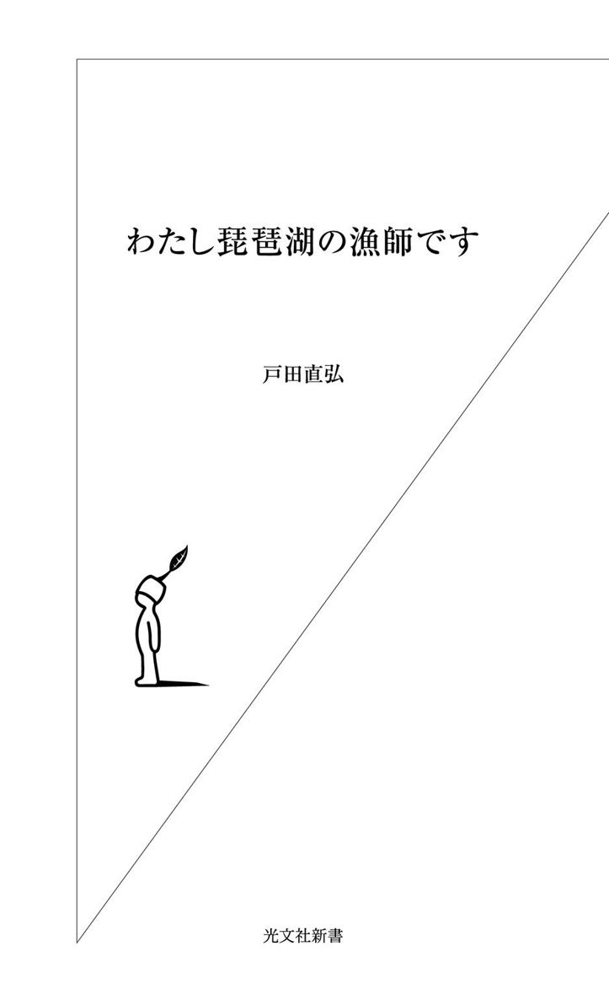
「琵琶湖の漁師の本を書きませんか」
この電話を受けたとき、「えっ、オレが！」と思いました。
いま、琵琶湖は外来魚という大きな問題を抱えています。そのことでフナとかアユ、それにホンモロコといった有用魚類の漁獲量が減り、漁師の生活に影響が出ているばかりか、湖魚に支えられてきた近江の食文化も寂しくなりつつあります。
「琵琶湖の漁師の生活、琵琶湖の漁の実際、外来魚の話、漁師の楽しみ・喜びなんかが残せたらいいなぁ」と、自信はないながらも引き受けさせてもらいました。
この話を受けさせてもらってしばらくあと、偶然ですが、地元の守山高校の新聞部の生徒さん十数人から、「琵琶湖の漁師の話を聞きたい」というインタビューの申し込みを受けました。わたしの姉の知り合いが新聞部の顧問をされていて、わたしが滋賀県漁業協同組合連合青年会の会長でもあるということで、どうやら白羽の矢が立ったらしいんです。いろいろな質問があって、「え、ほんまの話、ウソでしょう」と笑われるような内容も入れながら、三時間ほど漁師の考えや琵琶湖が置かれている状況を話させてもらいました。
そのインタビューで、わたしは、大きな二つの質問を予想していたんです。一つは琵琶湖の水質の問題で、もう一つは外来魚の問題です。
予想通り、ブラックバスやブルーギルといった外来魚に関する質問は活発に出たものの、水質の質問はほとんど出ませんでした。「戸田さんがぼくらの年齢の頃といまとで、水の状態はどう変わったんですか」という質問が出たとき、「それ、分からんわ」では格好つきません。それで一夜漬けで少しは勉強して、「これなら何とかなるやろ」というところまでいったんですけど、水質の変化についての質問はほとんど出ませんでした。
その代わりというか、高校生たちは意外なことに興味があったんです。漁師の生活をまったく知らへんのですね。「だいたい何時頃に起きてんの」とか「暇なときは何してはんの」とか、「いつ頃、どんな漁してはるの」といった生活への質問が集中したんです。
守山高校といえば地元の守山市にある創立四十周年を迎えようとする高校です。その高校生たちの興味が、身近に漁師を見たことのない大都会の高校生が聞きたがるような内容と同じやった。
「毎日、琵琶湖の風を聞き、琵琶湖の雲を見、琵琶湖周辺を自転車で走り回っている高校生にも、琵琶湖漁師というものが次第に遠い存在になりつつあるんや」
この現実を知ったとき、ちょっとショックでした。
わたしが小さいときは、野洲川でヤナ漁をする漁師もいれば、うちのような琵琶湖の漁師もゴロゴロいた。だから、守山の人間なら漁師の日常生活なんて聞かんでも知っていたけど、時代は変わったんやねえ。琵琶湖の固有魚種にはレッドリストに指定された魚もおるし、職業のレッドリストができたら、わたしら琵琶湖漁師も絶滅危惧種の指定を受けるかもしれませんわ、情けない話やけど。
わたしら琵琶湖漁師は絶滅危惧種になりたくないし、琵琶湖の漁もなくしたらあかん。高校生たちのインタビューを受けてから、わたしはこの本を本気になって考えました。
漁師のことですから、学問的なことより、実感や体験談が中心になります。その点、言葉でどこまで伝えられるかというもどかしさがありましたが、西山恵司さんの手をわずらわせて、期待通りの本ができました。琵琶湖の仲間ともども、これからも琵琶湖の漁業を維持・継続していく勇気も湧いてきました。「ありがとう」とお礼をいわせていただきます。
二〇〇一年 十二月
戸田直弘
目次
写真提供／滋賀県立琵琶湖博物館
イラスト／戸田直弘
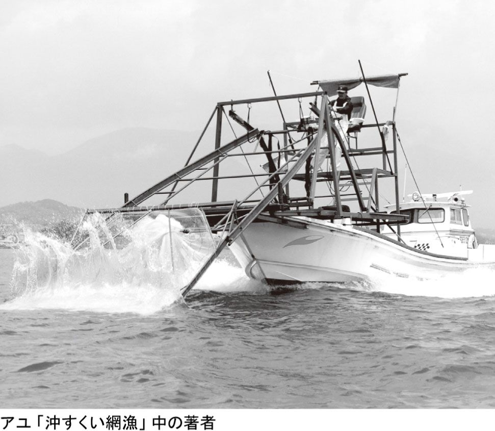
早いもんで、琵琶湖の漁師になって二十年になります。髪の毛をうしろで束ねたりしてちょっと見は若く見えますけど、時間は容赦してくれません。二十歳で漁師になりましたんで、いつの間にかわたしも四十の声を聞いてしまいました。
「戸田いいます、琵琶湖の守山で漁師してますねん」
琵琶湖では三十年、四十年と漁師をしている先輩がたくさんいますから、漁師歴二十年ではまだまだ大きなことはいえません。でも、いまはそれなりの自信を持っていえるようになりました。
守山市は、琵琶湖線の米原と京都のちょうど中間にある町で、隣の野洲町には日本ＩＢＭの大きな工場があったりしますが、守山にはこれといった大きな企業はありません。人口は七万人ほど、市のスローガンが「ホタルの住む町」というくらいですから、「自然ときれいな水が残る湖岸の鄙びた小さな町」と思ってもらって間違いありません。
「琵琶湖の漁師です」と自己紹介すると、反応が二つに分かれます。
一つは、「いま大変でしょう、外来魚はどうなっているんですか」と聞いてくる人です。これは、琵琶湖のことを少しは知っている人、それに外来魚の問題を知っている人です。もう一つは、困ったような顔をする人ですね。漁業と縁もゆかりもない人、琵琶湖にあまり興味のない人は、まずこういう顔をされます。
海の漁師と聞いたら、誰でもすぐに〝怒濤砕け散る大海原相手〟というイメージが湧くと思います。琵琶湖の漁師と聞いて困ったような顔をする人には、どうやら琵琶湖と漁業が結びつかんのやろね。そういう人の胸の内を想像すると、正直なところ、「琵琶湖がいくら大きいといっても、しょせん湖は湖。漁師が生活できるような漁業が成り立つはずがない」というような気持ちがあるんでしょうね。
たしかに琵琶湖は外洋ではないものの、琵琶湖と霞ヶ浦だけは、内水面（河川や湖沼）でも外区（海）扱いになっています。琵琶湖と霞ヶ浦の二つはそれほど広いし、他の内水面とは違うという行政の認識やと思うし、滋賀県漁業協同組合連合会は海の漁協がつくっている全国漁業協同組合連合会（全漁連）に参加してもいます。
わたしらが漁場にしているのは琵琶湖というれっきとした内水面ですけど、漁師としての立場は海の漁師と同じということです。わたしらは、琵琶湖いう「淡海」の漁師ですねん。漁師の心意気も海の漁師に引けを取らんつもりやし、海の漁師が「海の男」なら、わたしらは「琵琶湖という淡海の男」。強がりやなしに、漁師魂もきちんと持ってます。
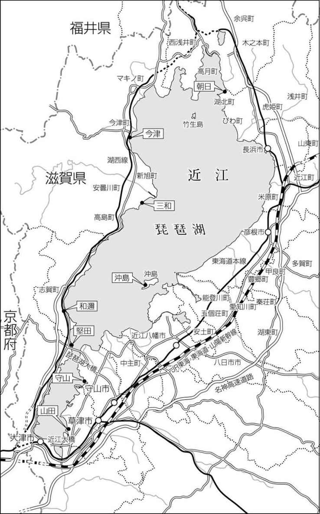
でまぁ、「琵琶湖にも漁師が生きている」ことを不承不承ながら納得した人の興味は、だいたい決まっています。次に飛んでくる質問は、こんなんですわ。
「ところで、琵琶湖でどんな魚を獲ってはるんですか」
何十回、何百回となく同じ質問をされてきたわたしとしては、「やっぱりね」と思いながらも、仕方がないから、「フナとかアユ、それにモロコなんかですね」と答えますが、フナとかアユと聞いて、また誤解されるんですわ。
「それは、投網で獲るとか、竿で釣ってはるんかな」
竿や投網でフナやアユを獲って生活できるほど、フナもアユも高価な魚やない。「一本ウン百万もするクロマグロを狙う一本釣り漁師やあるまいし、フナやアユの竿釣りで暮らしていけるはずがないやろ。バカにしてんのかあ」と口まで出かかった言葉をグッとのみ込んで、こう答えます。
「いえ、網で獲ります。ちゃんと漁船と網を使う漁をしてますねん」
あまり知られてませんけど、琵琶湖には五十七種の魚類と四十九種の貝類がいます。
漁法もいわれているところでは十五種類ほどあるし、わたしは「エリ漁」と「沖すくい網漁」、それに「コイト漁」の三つをやっています。
このなかで「コイト漁」いうのは、一般には「刺網漁」といわれている漁法で、あとで説明しますけど、わたしら漁業で生計を立てている人間は、当然、そこそこの数が獲れて値段のつくものを対象にしますわね。そうなるとアユ、フナ、モロコが琵琶湖漁業の三大対象魚ということになります。フナは琵琶湖地方特産のフナのナレ寿司や煮つけにしますし、アユやモロコは素焼きにして食べたり、特産の佃煮になったりします。
もちろん、シジミやウナギを獲っている漁師さんもいるけど、わたしが所属している守山漁協ではアユ、フナ、モロコでご飯を食べさせてもらっている漁師ばかりですね。そのアユ、フナ、モロコをいくつかの漁法を使って獲り分けるのが、わたしら琵琶湖漁師の代表的な生活になります。
琵琶湖には、春夏秋冬それぞれの季節、それぞれの魚の習性を生かしたいろいろな漁法があって、琵琶湖の風物詩にもなっています。実際に海の漁を超える多彩な漁法を見たら、「琵琶湖に漁師がいるのんか」と思った人も驚かれるやろうと思います。
琵琶湖では魚群探知器も集魚灯も禁止されているし、魚を追い回してつかむような漁はほとんどありません。ほとんどが「待ちの漁」です。
あとで詳しく話したいと思いますけど、エリ漁やウケ漁は魚がエリやウケに入ってくれるのを誘導して待つ漁やし、コイト漁も回遊する魚の通り道に網を張って魚がかかってくれるのを待つ漁です。
魚の姿を見て追いかける漁を強いてあげると、カラスの羽を使う「オイサデ漁」とアユを網ですくう「沖すくい網漁」くらいなもんやね。けど、「オイサデ漁」は、魚の習性を長年の経験でうまく利用した無形文化財的な漁やし、沖すくい網漁にしても、アユの群れを発見して網を投げ入れてすくうタイミングは経験と勘だけが頼りやから、これも原始的といえば原始的な漁に入るんと違うかな。
わたしなんか「『待ちの漁』やのうて『待ちぼうけの漁』や」というてるけど、「待ち人」ならぬ「待ち魚きたらず」で手ブラに終わることもままあります。どちらにしても、魚の気持ち任せの原始的でかわいい漁には違いありません。
いま琵琶湖は、「ラムサール条約」の指定を受けています。正式には「特に水鳥の生息地として国際的に重要な湿地に関する条約」というそうですけど、指定を受けたと聞いたときは「えっ、なんやこれ。琵琶湖の漁業はどうなるねん！」と思ったもんです。一応、気になって、読むというか目を通したら、そこにいいことが書いてありました。「古代から代々おこなわれてきた漁業は賢明な利用の仕方である」と書いてあるんですわ。
「有効な利用の仕方」と違いますよ、「賢明な利用の仕方」ですねん。わたしは、「琵琶湖の漁業はこれや」と思いました。「待ちぼうけの漁」は、琵琶湖漁師の賢明な知恵やったんです、魚を絶滅させず、漁師も一緒に生かしてもらう知恵、広くて狭い琵琶湖で魚と仲良く暮らしていく知恵なんです。いまは「共生」とかいうそうですけど。
先輩漁師はこの知恵を守って、いままで琵琶湖の漁業をはぐくんできた。これからもこの知恵を守って、あるいは稚魚の放流といったようにもっと積極的に生かしながら、琵琶湖の漁業を守り、残していきたい。
さっき、琵琶湖には五十七種の魚類と四十九種の貝類がいるといいましたけど、これだけ多くの生き物がすんでいる湖は、日本では琵琶湖だけです。わたしら漁師は琵琶湖に生かされている人間ですけど、魚たちも琵琶湖に生かされてきたんです。
五十七種類の魚類のなかには食害を及ぼしている外来種も含まれていますが、滋賀県の人でも、「えっ、こんな生き物が琵琶湖におるんか」と驚かれるような固有種、あるいは亜種と呼ばれる珍しい魚介類もいます。
たとえば、内湖を含む琵琶湖の固有種・亜種といわれる魚介類は、十五種類です。
ニゴロブナ、ゲンゴロウブナ、ホンモロコ、スゴモロコ、ビワマス、イサザ、アブラヒガイ、ビワヒガイ、ワタカ、二種類のスジシマドジョウ、イワトコナマズ、ビワコオオナマズ、ビワヨシノボリ、ウツセミカジカらですね。
貝類では、瀬田川を含みますが、ナガタニシ、ビワコミズシタダミ、十五種類のカワニナ、オウミガイ、カドヒラマキガイ、ヒロクチヒラマキガイ、マルドブガイ、メンカラスガイ、イケチョウガイ、オトコタテボシガイ、ササノハガイ、オグラヌマガイ、タテボシガイ、セタシジミ、カワムラシジミなどじつに二十九種もいるんです。
これだけたくさんいる固有種や亜種は琵琶湖の貴重な財産やと、わたしは思うんです。琵琶湖の財産いうことはそのまま日本の財産ということやし、ほんまに琵琶湖は日本の「マザーレイク」と呼ぶにふさわしい偉大な湖やと思います。
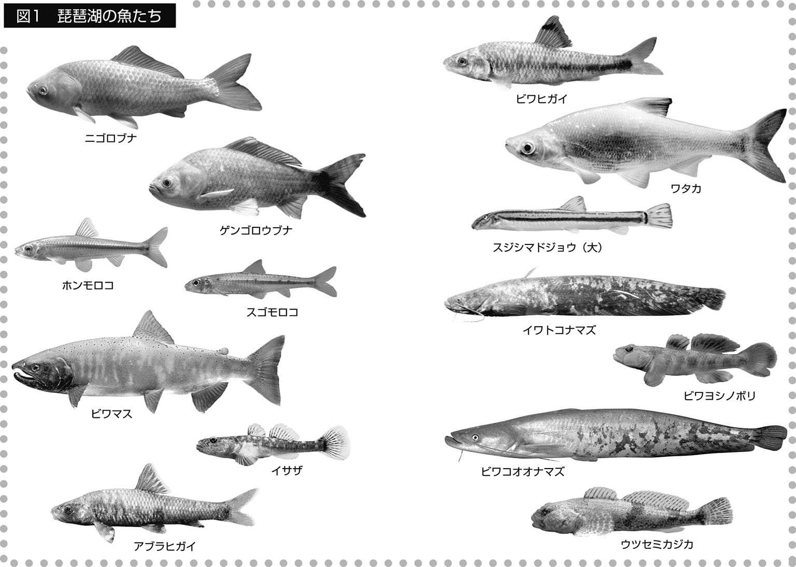
なぜこれほど多くの魚介類が琵琶湖にいるかというと、耳学問やけど、琵琶湖は四百万年前にできて、いまのような形になったんは四十万年前といわれてます。それまでは三重県の伊勢盆地を中心に、滋賀県の甲賀地方も琵琶湖の湖底やったいわれてます。いま琵琶湖は約六百七十平方キロメートルの面積やけど、当時はどれくらいの広さか見当がつきませんわね。
四百万年でも四十万年でもよろしいけど、その長い歴史のなかで、湖のなかで種が分化したり、古い時代に琵琶湖に入ったままの魚がそのまま生き残ったんやといわれてます。
それに、湖面から見ているかぎりは分からんのですが、琵琶湖のなかは複雑な地形になってますねん。北湖には水深百メートルを超す広い沖合があり、南湖には水深三～四メートルのなだらかな湖底もある。竹生島や葛籠尾崎周辺には岩礁もあれば、砂浜や砂泥底も湖岸や沿岸各所にあります。湖の深いところには、夏でも八度くらいの冷水帯もあります。こういった複雑な地形や環境のおかげで、それぞれの環境に適した魚や貝が生きておれるんですね。
わたしは学者と違って、琵琶湖の恵みを漁獲としていただいている漁師ですし、魚以外のことはあまり知らんので、これからの話は魚類だけに絞らせてもらいます。
これだけの固有種・亜種のなかに、もう滋賀県のレッドリストに載った魚もいますねん。ほんま、胸が痛うなります。
環境省にもレッドリストがありますが、琵琶湖を預かっている滋賀県でもレッドリストを作成していて、その滋賀県のレッドリストには、「絶滅危惧種」、「絶滅危機増大種」、「要注目種」、「分布上重要種」、「希少種」といった区分がされてます。いまあげた琵琶湖の固有種・亜種のうち、アブラヒガイ、ワタカ、それに二種類のスジシマドジョウの四種が「絶滅危惧種」で、「絶滅危機増大種」にはイワトコナマズが指定されています。
子供の頃からオヤジに連れられて琵琶湖に漁にいってましたけど、このワタカいう魚に、わたしは強烈な思い出があるんですわ。
小学校五年か六年の頃と思いますが、家の食材に使う魚を獲るためにオヤジと琵琶湖に出たんです。梅雨時やったと思うけど、ワタカが産卵のためにヨシ地帯に群がる時期やった。ワタカは三十センチくらいの魚で、顔はフナとは縁遠い顔してますけど、家庭で漬けるフナ寿司の代用魚として十分に使える魚なんです。
いま考えると信じられない話なんやけど、船の舳先から、ワタカの群れ目がけて投網を打っても、投網は浮いたまま。網の先には鉛の重りがついていて、水に入ると沈むのが当たり前ですよね、その網が沈まへんのです。
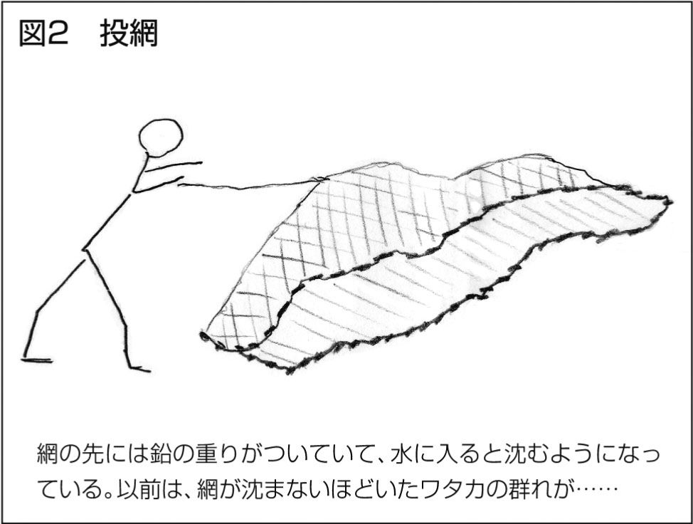
狭い網のなかに閉じ込められたワタカの群れが、いき場を失って網を持ち上げよるんです。たとえはあまりよくないけど、浮かんでいるゴミに網をかけても網は沈みませんよね。それと同じ状態、ゴミがワタカと思ってもらえば分かってもらえるやろか。
網にワタカがいっぱい入っていても、そのままでは網を引き揚げられません。どうするかというと、そうした経験は一回だけやないから、半ズボンのまま水に飛び込んでいく。網のところに素早く泳いでいって、水に潜る。それで、広がった投網の底をキンチャクの口を締めるように抱え込むんです。
抱え込むと、網に入ったワタカが腕のなかでバチャバチャ跳ねよったもんです。わたしが網を抱えたそのまま、その網をオヤジが船の上から手繰り寄せる。まあ、網と一緒にわたしも引き寄せられる格好になります。群れを見つけて一回網を打つと、自分の家で使う分や頼まれた分の漁獲は十分にありましたね。
そのワタカが、いまは滋賀県のレッドリストに載ってますねん。「ワタカが減ってきたなあ」という実感はあったんですが、子供のときの経験があるだけに、レッドリストに掲載されたときはほんまに驚きました。あれだけいたワタカがなぜ絶滅を心配せなあかんようになったのか、寂しいかぎりです。
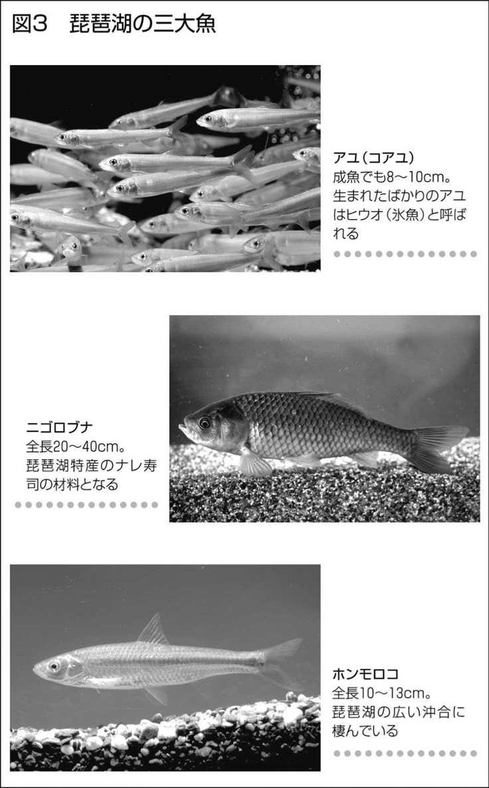
ホンモロコは全長十～十三センチのきれいな魚で、琵琶湖の広い沖合にすんでいます。産卵期は三～六月で、内湖や湖岸の水生植物帯で産卵します。美味くて商品価値の高い魚ですから、一年を通じて獲るためにいろいろな漁法がありますけど、最近では漁獲が減少しています。
ニゴロブナは全長二十～四十センチのフナで、琵琶湖特産のナレ寿司の材料としてはピカ一の魚ですね。琵琶湖の沖合の湖底近くにすんでいますが、産卵期の四～七月には、ものすごい群れをなして接岸するんです。
岸に向かって泳いでくるニゴロの大群を、漁師言葉では「イオジマ」いいます。「イオ」いうのは「魚」のなまりやろうから、「イオジマ」は「魚の島」ですね。ニゴロの大群が島のように見えるところからついた名前でしょうけど、イオジマができたのも以前の話で、最近ではニゴロの漁獲も年々減ってます。
アユでも琵琶湖のアユは小型で、成魚でも八～十センチほどの大きさにしかなりません。それで、「コアユ」と呼ばれてますね。生まれたばかりの九～十二月のアユは身体が細うて、氷のように透き通っているところから、とくに「ヒウオ（氷魚）」と呼ばれてます。
これ以外にも、昔から獲られて食べられてきた琵琶湖の湖魚に、ハス、ビワマス、ヨシノボリ、イサザといった魚がいますね。
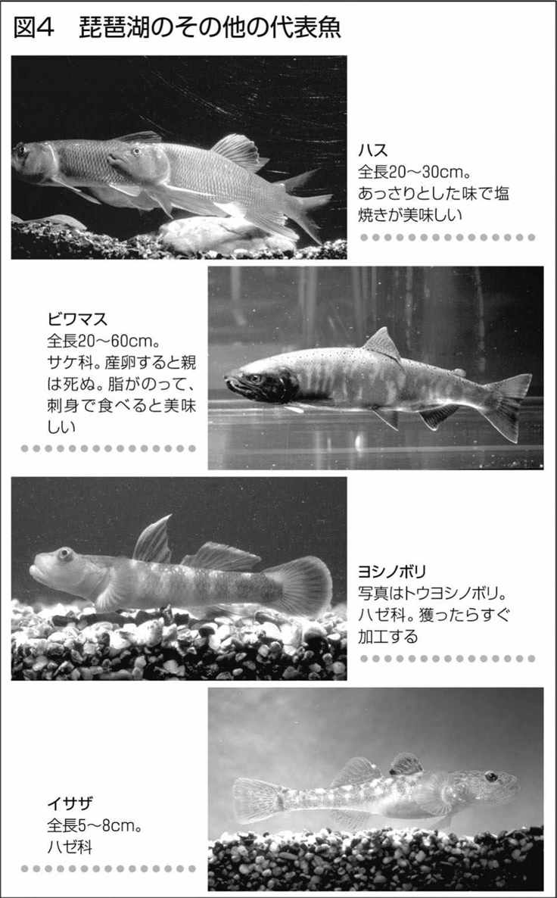
ハスは全長二十～三十センチで、いつもは琵琶湖の表層から中層にいますけど、産卵期の六～八月になると川にのぼって、砂と小石の混じったところで産卵します。この時期に川をのぼる大型のハスをここらでは「ケタバス」と呼びますが、あっさりした味で塩焼きが美味いですね。
ビワマスはサケ科の魚で全長二十～六十センチ、琵琶湖の北の部分、いわゆる北湖にすんでいます。琵琶湖にマスがいるのを知らん人が多いですが、冷水を好むために、夏でも水温が十五度前後の水深十五～二十メートル付近を遊泳しています。産卵期の九～十一月になると北湖に入る河川にのぼって産卵して、産卵するとサケと同じように親は死んでしまいます。産卵期のビワマスは「アメノウオ」とか「アメノイオ」、「アメノオ」と呼ばれたりしますが、沖のコイトで獲れるビワマスは脂が乗って、刺身で食うたら絶対忘れられん味です。
ヨシノボリいうのはハゼ科の魚で、稚魚が「ゴリ」と呼ばれる魚です。琵琶湖にはトウヨシノボリとビワヨシノボリの二種類のヨシノボリがいますが、湖魚のなかでも鮮度の落ちるのがとくに早いんで、獲れたらすぐに加工せなあきません。
イサザはハゼ科の魚で、全長五～八センチになります。日中は湖底にいますが、日没とともに湖面に近いところまで浮上してプランクトンを食べて、明るくなるとまた水底に移動します。産卵期は四～五月で、湖岸の浮き石の下で産卵します。
最近は湖魚を食べる人が減ってきたけど、琵琶湖には海の魚に負けん栄養価の高い美味い魚がなんぼでもいます。琵琶湖が日本の財産であるように、琵琶湖の魚も大事な日本の財産です。琵琶湖の湖魚料理は、近江の食文化だけやなく、日本の食文化でもあると思うんです。その食文化をもっとたくさんの人に知ってもらいたい、味わってもらいたい。琵琶湖の漁師はそんなことも思って漁をしてるんですねん。
琵琶湖の漁師は、数十万年の年月にわたって琵琶湖に生かされてきた貴重な魚を相手に暮らしているわけです。琵琶湖には、漁期の決められているアユのような魚もいますけど、だいたい一年を通して何かの漁ができます。
春の漁は、産卵に向かう魚を相手にする漁といえるでしょうね。
冬の間、フナ、モロコ、コイ、アユといった魚たちは、北湖の「フカリ（深み）」や岸辺の水草地帯や泥のなかでじっとしてますけど、湖の水がぬるみだすと活動をはじめます。そう、水温にして十度を超えるくらい、時期は彼岸すぎてからになるでしょうか。
この時期は魚の産卵期で、産卵のために、北湖のフカリから水深の浅い南湖へ移動するんです。琵琶湖の魚が一年で一番活発に移動するのがこの時期になりますから、漁師も忙しいしてます。
二月には、コアユ、イオ（ニゴロブナ）、ゲンゴロウブナ相手の「エリ漁」が湖岸ではじまります。エリ漁は琵琶湖の特徴的な漁法で、あとで話しますね。
アユの接岸とともに、普通三月には「オイサデ漁」がはじまって、だいたい六月くらいまでおこなわれます。このオイサデ漁がはじまると琵琶湖にもうすぐ本格的な春がきます。わたしはやってませんけど、これは「オイボウ（アユを追うための棒で、オイザオとも呼ぶ）と、「サデ網（アユをすくう網）」を使うおもしろい漁ですねん。
オイボウは三間（五・四メートル）ほどの竹竿で、その先には一メートルほどの間隔を置いて「オイバネ」というカラスの羽がついてます。オイコ（追い子）がコアユを探し、コアユの動きに合わせて、オイボウのカラスの羽で水面をなぞるように走らせる。これでコアユを集めて、サデ網のなかへ追い込むんです。言葉にすると簡単なように思えるけど、これは生半可な技術やないです、熟練せえへんとアユは獲れませんわ。
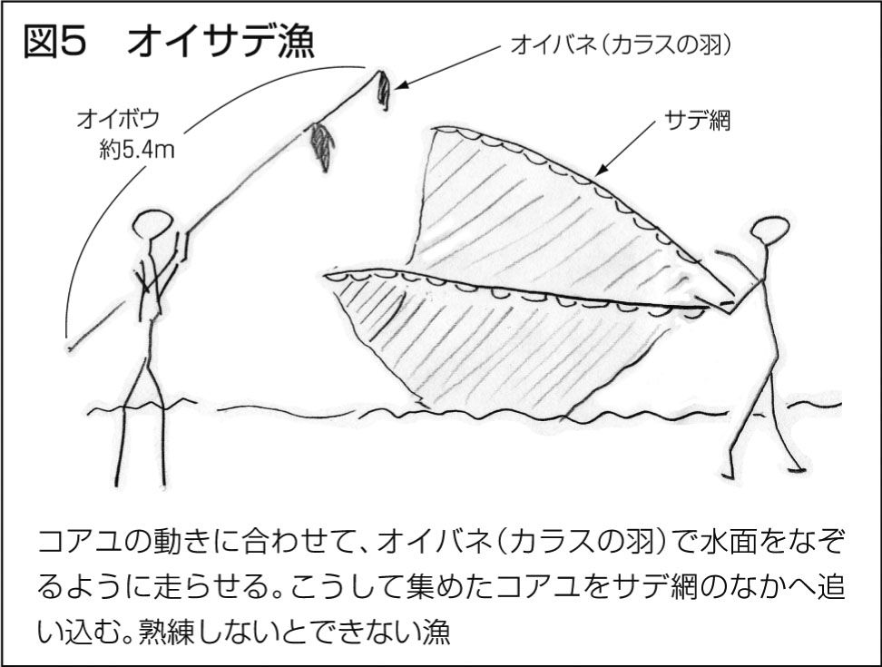
四月には「ウケ」や「モンドリ」を使う漁もはじまって、六月くらいまでおこなわれます。ウケは割竹を編んでつくられた籠のようなもので、魚によってフナタツベ、フナモジ、モロコウエ、ドジョウウエなんかがあります。似たようなもんですけど、網製のものをモンドリいうてますね。このウケやモンドリは、産卵にやってくるコイ、フナ、モロコなんかを対象に仕かけられます。
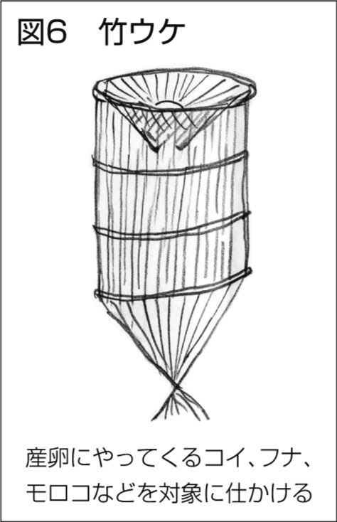
沖合では、漁師が「コイト」と呼んでる刺網漁が盛んになります。コイトには、ニゴロブナの「イオゴイト」、コアユの「アユゴイト」、スゴモロコの「スゴゴイト」なんかがありますけど、四月から六月が最盛期になります。
フナのナレ寿司に使うニゴロブナは、卵を持ったメスが最適なんで、この時期のイオゴイトには力が入ります。イオゴイトは漁のはじめは沖合のフカリに仕かけられるんやけど、フナの産卵が近づくと、岸に寄ってくるフナを狙ってだんだん岸に近いところに仕かけられるようになります。
コイトはフナの通り道を横切るように仕かけんとフナはつかめませんから、どこに仕かけるかのポイント選びが漁師の腕の見せどころになりますね。コイトもあとでもう少し詳しく話をさせてもらいます。
気温の高い夏になると、琵琶湖には三つの水温層が垂直方向にできてきます。
水深十五メートルくらいまでの比較的水温の高い層と、夏でも水温が八～九度と冷たい二十五～三十メートルの層、その中間の層の三つです。専門的には、湖面から、「表水層」、「水温躍層」、「深水層」というそうです。
魚にはそれぞれ水温の好みがあって、温水を好むアユやコイ科のホンモロコは水面に近いところで生活し、冷水を好むビワマスやイサザはフカリで暮らすことになります。で、わたしら漁師は、狙いの魚がすんでいる層に仕かけを入れることになります。
この時期の琵琶湖漁の代表は、何というてもわたしもやっている「アユの沖すくい網漁」やね。六月末から七月の短い間だけ、琵琶湖のアユは「マキ」をつくります。「マキ」いうのは、水面が真っ黒に盛り上がって見えるほどのアユの群れのことですけど、船の上からこのマキをすくい獲る漁がこの沖すくい網漁ですねん。わたしはこのアユの沖すくい網漁は、見える魚を獲るという点で、大好きですね。あとでもうちょっと話をさせてもらいます。
ウケ漁は、夏場でもやられてます。春のウケ漁は産卵のために移動する魚を通り道で待ち受けますが、夏は魚の食欲が旺盛になりますから、夏のウケ漁は、餌を使ってウケに魚をおびき入れる漁になります。
この時期のウケ漁には、コイをつかむコイタツベ、ウナギのタケヅツ、ゴリを狙うゴリモジ、スジエビをつかむエビタツベなんかがありますが、漁期や仕かけは地域によっていろいろと違ってきます。わたしはウケ漁はしませんけど、エビタツベ漁を夫婦でやっている光景を見ると、その手際の良さにほとほと感心させられますね。
タツベは「竪瓶」と書きますけど、一つの大きさが直径二十五センチ、高さが二十センチくらいの籠と思ってください。エビタツベ漁は、ミチナワに一ヒロ半（一ヒロ＝一・八メートル）から二ヒロの間隔を置いてエビタツベを結びつけます。タツベは昔は竹製でしたけど、いまはプラスチック製になってます。だいたい百個から二百個結んだものを一つの区切りにして、一度に五～八区切り、数にして千～千五百個のタツベを沈めます。
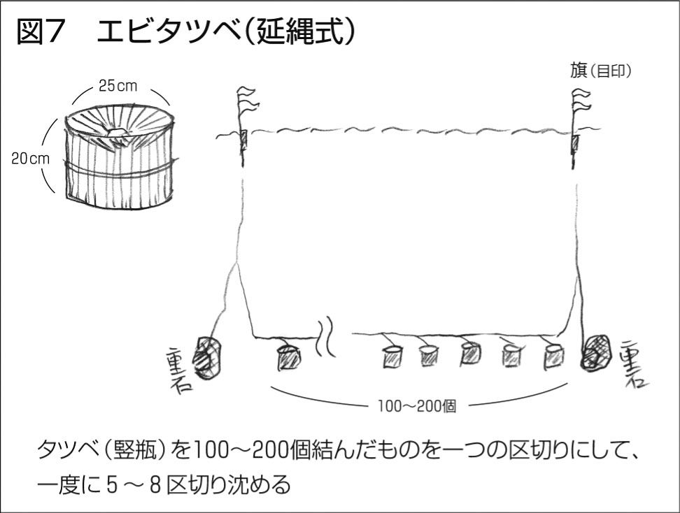
で、漁場でパッパッと沈めやすいように、それだけのタツベを船にきれいに積み揚げるんです。その手際もすごいもんですし、タツベを揚げるときもすごいもんです。タツベを次々に揚げては、崩れんように積み上げていく。やれと言われても、ちょっとやそっとではできない芸当やね。
七月になると、ヨシノボリ（ゴリ）の稚魚を獲る「チュウビキ網（沖曳き網）漁」もやられます。ゴリを獲るチュウビキ網なんで、「ゴリビキ網」ともいいますね。
ゴリは「ウロリ」という変わった名前でも呼ばれますけど、ものすごく軟らこうて、すぐに鮮度が落ちますねん。ぐずぐずしてると溶けてなくなりよるんで、揚げたらすぐ水洗いして飴炊き（佃煮）にされます。
七月から九月くらいまでは、ホンモロコやビワマスのコイト漁もされてます。
その他、夏場には「ハリコ」と呼ばれるハエナワ漁もやられてましたけど、いまは年配の漁師が遊び程度にやるだけになりました。
うだるような暑さが峠を越え、お盆もすぎるようになると、表水層の水温も下降をはじめます。この時期も、魚たちの食欲は旺盛で、長い冬とそのあとの産卵という大事業のために、体力と栄養を蓄積しようとするわけです。
この時期は、魚が冬を越すための場所に移動する時期でもあるんですが、移動の規模は春より小さくて、一匹一匹が思い思いに移動していくというような感じです。
それに、八～十月は秋の産卵を控えてアユ漁が禁止されて、わずかにゴリビキ漁と手長エビを狙うエビタツベ漁、それに秋後半はスゴモロコをつかむコイト漁がおこなわれている程度です。スゴモロコはホンモロコの代用として佃煮になりますが、ホンモロコより味は少々落ちますね。
夏にはじまったホンモロコをつかむコイトも九月一杯で終わりますけど、九月頃に獲れるホンモロコは「秋モロコ」というてこれも、また美味しいモロコです。まぁ、琵琶湖漁師に漁閑期があるとすれば、この時期がそれになるんでしょう。
手長エビは、スジエビと違って、商品価値が高いエビですねん。スジエビがキロ五百円ほどとすると、手長エビはキロ四千円もします。なぜそんなに高値になるかいうと、格好がきれいなんやね。それで、料亭で一品料理にされたり、添え物として珍重されるんで高う取引されるんです。
この手長エビは、もともと琵琶湖にはいなかったエビだそうです。大正年間に霞ヶ浦から種エビが放流されたのが最初と聞いてます。
手長エビをつかむエビタツベも、スジエビをつかむタツベと同じようなハエナワの仕かけを使います。ただ手長エビはスジエビより少し身体が大きいので、タツベの寸法もそれだけ大きくなっています。
渡り鳥が飛んでくる頃になると、琵琶湖も冬化粧やね。湖北の山には雪が積もって、琵琶湖の表情もいっぺんに厳しいもんになります。湖面の風はそれこそ肌を裂かんばかりのもんです。
夏の漁のところでもいいましたように、夏の琵琶湖は三つの水温層に分かれますが、冬になると湖面から湖底まで水温はほぼ八度前後になります。湖中全体が夏場の深水層の温度になるわけです。
秋に産卵するアユやビワマスを除くと、琵琶湖の魚は春に産卵しますから、産卵を控えたこの時期の魚は脂がよく乗って一年で一番美味い時期です。漁師にしたら漁閑期がすぎ、本腰を入れてかかる時期で、美味い魚をつかもうと漁師はいろいろな漁をやります。
チュウビキ網漁では、イサザの「イサザアミ」がだいたい九～三月、ホンモロコの「モロコアミ」が十一～三月、スゴモロコの「スゴアミ」が十一～四月、スジエビの「エビアミ」が十～三月くらいかな。
前もいうたと思いますけど、「ヒウオ（氷魚）」と呼ばれる生まれたばかりの冬のアユがいます。このヒウオをつかむエリ漁も、十二～三月にかけて盛んになります。
コイトでは、一月くらいから「アユゴイト」や「イオゴイト」がはじまって、アユは七月末、イオは七月半ばくらいまで漁がつづきます。
冬の漁は、口ではいえんほど厳しいもんです。ほんまありきたりな表現ではきかんほど寒いなか、みなさんがまだ暖かい布団のなかで寝てはる朝の二時半か三時くらいには家を出ます。ヒウオのエリ漁も重なる二月、三月は、午前零時半には家を出たりしますね。夏場の朝二時半はこたえませんけど、冬場はキツい。鼻水をズルズルいわしながら、エリ漁の前に、昨日仕かけたコイト網を揚げに琵琶湖に出ますねん。
それでも、網に魚がようけついてると、現金なもんで辛さも吹き飛ぶってもんです。漁師冥利を感じるときですね。漁師やっててよかったと思いますし、網を揚げながら鼻歌が出たりもしますよね。逆に、手ブラや魚がチラホラしかついてんときは、寒さがいっそうこたえ、肩がガックリ、嫌になりますね。
いまいろいろな漁を紹介しましたけど、漁師がやらなくなったり、時代の変化で琵琶湖から姿を消してしまった漁法もあります。
その一つが、海の漁でも観光用になってしまった地曳網です。
地曳網は、規模によってオオアミ（大地曳網）とコアミ（小地曳網）があります。どちらも三つの部分からできている構造は同じで、魚を獲る袋状の部分（フクロ部）と、そこへ魚を誘導するガワ網部、それと曳綱からできています。琵琶湖の沖島でおこなわれていた地曳網はフクロ部三十二メートル、ガワ網部が九百メートル、曳綱が四百メートルもあるオオアミで、全長は千八百メートルもあったと聞いています。
地曳網は、「シオミ（潮見）」という作業ではじまります。
海とは違いますが、琵琶湖にも水の流れがあります。わたしらはそれを「シオ」と呼んでますが、シオの流れる方向を見て、どの辺りに網を入れてどの方向に曳くかを決めるのがこのシオミです。
古い漁師に聞くと、シオミには古い網を大きめの鶏卵くらいに丸めて糸でくくり、それに十ヒロ（十八メートル）くらいの綿糸をつけ、古いアバ（浮子）に結んで船べりから湖中に落としたそうです。その動きを見て、網を落とす場所と陸の網曳き場が決められたんやね。
シオミで網を落とす場所と陸の網曳き場が決まると、フクロが湖中に入れられ、二艘のアミブネが左右に分かれてガワ網を投入していきます。ガワ網をずっと落とし、最後に曳綱が陸で待つ漁師に渡ると、漁師たちがロクロと呼ばれる巻取用の装置を回して綱を巻き取っていましたが、やがて機械のウインチで巻き取るようになりました。
漁業としての地曳網は消えたものの、うちの守山漁協では、幼稚園の子供たちに地曳網を曳いてもらう催しを開いています。日頃は漁と縁のない子供たちがお父さん、お母さんと一緒になって曳綱を曳きますけど、一生懸命に小さな足を踏ん張って網を曳く姿は、そりゃ、かわいらしいもんですよ。
まぁ、網を曳いた子供たちが漁師になることはないと思いますし、地曳網を復活させるつもりもありませんけど、琵琶湖に親しんでくれる機会が提供できたらそれでいいと思ってますから、ずっとやっていきたいですね。
漬柴漁は、「ツケシバ」とか「ツケ」、「アナ」、「ネヤ」といろいろ呼び方があって、内湖（とくに大中の湖）などで盛んにおこなわれた漁でした。この漁は、山から切りだしてきたシバを水中に積み上げて魚礁をつくり、そこに魚を誘い込む漁でしたけど、内湖の埋め立てなどで魚場がなくなって姿を消しました。
ツケシバは年に一～二回おこなわれて、一回のところは十二月末から一月にかけて、二回やるところは三月末から四月中旬に二回目をやってました。二回目をやるところは、次のツケシバのためにシバを水になじませておく意味があったように聞いてます。
ツケシバにはシバの目の細かいものと目の粗い二つがあって、目の細かいツケシバではホンモロコ、スゴモロコ、手長エビの他に、ヒガイ、スジエビ、ワタカ、タナゴ、ナマズ、ギギ、フナ、オイカワといった魚、目の粗いツケシバではコイ、ヒガイ、手長エビ、ゲンゴロウブナ、ナマズ、ギギなどが入りました。
そのつくり方ですけど、直径五メートルほどの円を描くように、水中に竹杭を六十センチほどの間隔で軽く差し込みます。数にすると二十～三十本の竹杭が必要ですが、そのなかに頭が水面から少し出るような感じになるくらいまでシバを積む。あとは、シバが風波で飛ばないように周りの竹杭をワラナワで縛って完成です。
ツケシバを一つつくるのに、そう、だいたい二トンほどのシバが必要と聞きました。使うシバは堅くて腐りにくいツツジ、ナラ、クヌギといった木の枝がよく使われていたようですが、手に入りにくくなってからは柳の木で代用されたそうです。
魚を獲り込むときは、ツケシバの側にまず船を固定し、ツケシバの周囲を竹簀で取り囲む。竹簀で囲み終わると、ヨツカギ（トビのような道具）やヤスを使ってシバを船に引き揚げてから、投網のようなものやオイサデ漁に使うサデアミのような網で魚を獲ったそうです。
この漁も原始的な漁やけど、水草や沈礁などで冬を越す魚の習性をうまく利用した漁で、漁師の知恵が感じられる琵琶湖らしい漁の一つやったといえるでしょうね。
あと琵琶湖から姿を消した漁では、カモ猟もそうですね。
漁師がカモ猟をするって不思議かもしれませんけど、昔の琵琶湖漁師ではごく普通のことだったそうです。琵琶湖のカモ猟は堅田に古い歴史があって、堅田の西の切が琵琶湖のカモ猟発祥の地と伝えられてます。
そのカモ猟も一九四七年九月に当時の占領軍から禁止されて、以降は有害鳥の駆除目的でわずかにおこなわれていただけで、一九六四年からはいっさいのカモ猟が姿を消しました。
あとで勉強したんですけど、琵琶湖のカモ猟は一風変わった猟だったんですね。フジのツルにトリモチを塗って、それを湖上に流す。漁師たちは「ナガシモチ」と呼んでたそうですけど、地域によっては「モチナワ」とか「モチロウ」、「モチバエ」と呼んだところもあったようです。
使うツルはマッチの軸のように細い細いツルで、それをひと晩水に漬けて軟らこうします。そのツルを二百メートルほどつないで、トリモチをよく塗ってから「ワク」と呼ばれるものに巻いておく。これは三人一組の猟で、船を操る「オシコ」、モチナワを仕かける「モチヤリ」、モチナワを火であぶってモチヤリに渡す「モチアブリ」の三人で一組になります。カモのきそうな場所の風上の湖面に、浮きをつけたモチナワをジグザグになるように流すんです。
その一つ「ヨシマキ」というカモ猟は、日が暮れてくるとカモがヨシ地帯に寄ってくる習性を利用した猟で、その名のようにヨシ地帯を取り巻くようにモチナワを仕かけ、桐の木でつくったオトリガモを浮かせてカモを誘う猟です。上空を飛んでくるカモはオトリガモを仲間と思って近くに着水して、モチナワにかかるという寸法ですね。一度この目で見たかったもんです。
春夏秋冬いろいろな漁、待ちぼうけの漁があるなかで、うちの守山漁協では、ハエナワ、タツベ、オイサデ、ウケなどの漁はやられていません。
いまわたしがやっている漁も、「エリ漁」、「沖すくい網漁」、「コイト漁」の三つで、守山ではこの三つを組み合わせる漁師がほとんどです。他に、チュウビキ網漁をやる漁師が四～五人いるくらいです。
そのなかのエリ漁は、湖中につくった人工の迷路で魚をつかむ漁法で、古くからアユをつかむのにおこなわれていた古代漁法と伝えられてます。木浜（守山）発祥とされる琵琶湖独特の漁法だけに、守山の漁師は誇りを持ってエリ漁を受け継いできましたし、わたしも伝えていく心構えでいますねん。本家だけに、守山の漁師が建てるエリはいまでも琵琶湖一という自信がありますね。
エリは、以前は二～三月に建てられ、その年の七月末頃まで操業されてました。最近では十～十一月頃に建てられ、漁期は十二月から翌年の七月末頃までになっています。これは十二～三月のヒウオを対象にするようになったからで、三～七月はコアユが中心になります。
エリの形は矢印のようになっていて、矢印はフカリ（沖）に向かって伸びています。
湖岸伝いに魚が泳いでくると、「ハリズ」で前に進めんようになります。前をさえぎられた魚は水深の深いほうに逃げる習性があるので、フカリへいこうとする魚は「セガワ」と「オオガタ」で囲まれた「ツル」に誘導され、なかを遊泳することになります。
ツルのなかを気持ちよく泳いでいるうちに、「カガミ」から「オボライ」、「コボライ」とどんどん狭いところに誘導されて、最後に「ツボ」に落ち込みます。ツボに入った魚は、「ツボカキ」と呼ぶ作業で漁獲されることになります。とくにヒウオは小さくて弱い魚ですから、冬の厳しいなかでも、毎朝、ツボカキをしにいくことになります。
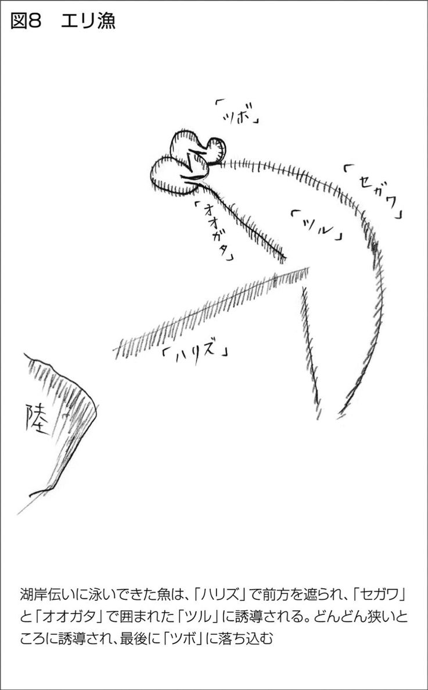
この漁のポイントは、魚を気持ちよく泳がせながら、少しずつ漁師の思惑通りに進ませられるかどうかです。そのために、何といっても水の流れをどう受けるかが最大の焦点になります。
それを決めるのが、岸とワタリの角度になります。ある程度水を入れて、ワタリからツボまで魚を気持ちよく誘導できるかどうか、これがエリを建てるときの最大のポイントです。ここを失敗すると、いくら魚が入りたがっていても魚は入り切らず、ウロウロしたあげくに逃げてしまいます。エリは漢字で「魚」へんに「入」ると書きますけど、この字は常用漢字にはありませんし、すごいセンスのある人がつくった字やと思いますね。
このエリの形は、昔からほとんど変わっていません。魚の習性が変わらんかぎり、形を変える必要はないんでしょうね。地域によってはセガワの部分をＴ字型にしたり、矢印を鋭角にしたり、それなりの工夫をしているところはありますけど、わたしら守山の漁師に言わせたら、「これでは魚は入らへんで」というようなエリもあります。
大きな構造は変わってませんけど、小さな構造の変化はあります。
昔は魚を誘導する構えが一つだけの「一段エリ」でしたが、いまは誘導の構えが二つになった「二段エリ」が主流です。海区の調整規則で全長は四百～五百メートルと決められているので、もちろんその範囲内でのものです。
昔は、守山から対岸の堅田まで届くような、ものすごく大きなエリがあったそうです。いまじゃ絶対許可されませんね。
これだけ大きなエリになると船の航行に支障が出ますから、途中には「フナドオシ」と呼ばれる船を通す部分が切られてました。当時はあふれるほど魚もいたし、産卵のために北湖から南湖へ移動する魚はいまの比やないから、すごい漁獲があったんでしょうね。この大エリの模型は南郷水産センターにありますんで、琵琶湖の近くにこられたときに見物されたらその大きさにびっくりされると思います。
いまももちろん、その当時でも、琵琶湖では集魚灯は使われていません。
集魚灯を使うとプランクトンが集まり、そのプランクトンを食べようと魚が集まります。そうなるとほとんど根こそぎ漁獲できることになりますので、琵琶湖の漁師はやらんわけです。限りある資源である琵琶湖の魚とどう共存していくか、その知恵と規制が集魚灯の禁止にも表れてるんです。
いま行政も漁連も、エリを減らす方向で検討しているようです。エリの権利を持ちながら操業していないようなところがあるからやけど、使わんのならエリの権利を持つ必要はないと思うし、基本的にわたしも賛成してます。
エリで変わったことというと使われる材料、これは大きく変わりました。
昔のエリに使われた簀は、割竹をシュロナワかワラナワで簾状態に編んで、竹の杭で湖底に刺してつくったもんです。杭になる竹の下部分を湖底に二メートルほど突き刺し、湖面から二メートルほど出します。沖にいくにしたがって水深は深くなりますから、沖にいくだけ使う竹簀も長くなります。
その竹簀が重いの何のって。建てるときや外すときに何度か手伝いにいきましたが、外すときは竹簀が水気を吸って、その重さはいまでも忘れられません。肩や腰が痛くなるし、「もっと利口な方法はないんかい」と思ったもんです。
いまは「網簀」といって、竹を編んだ簀の代わりに網を使っていますし、杭もコンポーズと呼ばれるグラスファイバー製のものを使っています。一番長いコンポーズで十四～十五メートルくらいありますけど、グラスファイバーだと非常に軽いし、建てる手間も省けて助かってます。
一番助かったのは、竹だと三年ほどの耐用年数しかなかったんですが、グラスファイバーだと十年は使えますから、エリを建てる回数も修理の回数もぐんと少なくなりました。
二百ないし三百メートルのエリを建てるのに、網とグラスファイバー製のコンポーズを使えば、十人で三日、四日で建て終われます。昔のように割竹を編んだ簀を使っていた時代から考えると「屁」みたいなもんですね。
いまでもコイト漁師やチュウビキ漁師は、エリの漁師を「エリ師」と呼んでます。それくらい特殊技能だったいうことですけど、網エリになってからはその特殊技能性も低下してきました。
ツボに入った魚の獲り方も、進歩しました。昔は周囲を竹簀で囲ってるだけでしたから、ツボに何度も手網を入れてすくってました。効率は悪いし、時間もかかりました。いまの網エリではツボ全体が網になってますから、網を引き揚げれば入った魚が一度で全部獲れるようになっています。これも便利になったエリの変化といえますね。
六月中旬から七月末にかけての琵琶湖の風物詩が、このアユ沖すくい網漁ですねぇ。
この時期になると、琵琶湖のアユは、漁師が「マキ」と呼ぶ大きな塊をつくって水面近くに上がってくるんです。アユの大群が塊をつくり、ちょうど渦を巻いたような感じになって回遊するところからついた表現でしょうが、アユの群れを見てもらえば「なるほどなぁ」と実感してもらえると思います。けど、なぜアユがマキをつくって水面近くに上がってくるか、それはアユに聞いてください。
アユすくい網漁は、その名前の通り、マキを網ですくいあげる漁法になります。
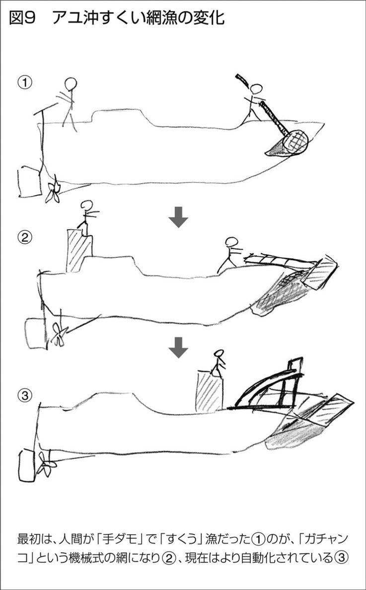
自慢やないですけど、わたしは五百メートル先を泳いでいるアユの群れが分かります。そりゃ、五百メートル先のアユですから、一匹一匹の魚体までは確認できません。でも、数にしてだいたい百匹くらいのアユが水面下三十センチに固まって泳いでいればもう分かりますね。
もし素人さんと一緒に船に乗ったとして、わたしが「あれやったら百キロくらいのマキやなあ」といっても、どこにそのアユの群れがいるかさえ、素人さんには分からへんでしょうね。けど漁師には、その魚が右を向いて泳いでいるのか左を向いて泳いでいるのかも見えるんです。「ほら、あそこや、右向いて泳いどるやん」と指で教えても、「どこ、どこなん、どこにおるねん」と探し回ったあげく見つけられずに終わるでしょう。
まあ、漁師だから分かるといってしまえば終わりなんやけど、魚の背中の色でその水面の色加減が周りの水面の色加減とはほんのわずかだけ違うんです。水面の色加減が違うといっても、その水面の色加減の違いを違いとして見分ける「漁師独特のアユの見つけ方」もありますね。
いつか、サラリーマンの方とすくい漁の話になったことがあります。「漁師のアユの見つけ方」を話したら、「いい話を聞かせてもらった。仕事の参考になったわ。戸田さんありがとう」とえらく感謝されたことがありました。
魚を見つけようとするとき、当たり前やけど、素人さんは、魚がいるかどうかを確かめるために水面をじっと見つめます。魚は、琵琶湖のどこにいるか分かりません。水面をあれこれ目で探し回ることは、何とかして魚の姿を見つけようと血眼になるわけです。悲しいかな、この方法ではアユの群れはまず発見できません。
「もしあそこにあれくらいのアユの群れがいたら、水の色はこんなふうになっているはずや」
わたしだけでなく、琵琶湖ですくい漁をやる漁師はみなこう思って水面を見てるはずです。その見方に、「この風ならこっちの方向に泳いでいるはずやし、この時間ならあそこら辺りにいるはず」という長年の経験と勘が組み合わされる。
つまり、漁師は、「いたらこうなるはず」と「いるとすれば、いまならあの辺り」という二つの推理で水面を見るわけですね。こうして水面を見ると、漠然と見ていると目立たない違いが見えてきて、「ここにいますよ」と教えてくれるんです。だから、五百メートル先の、しかも水面下にいるアユでも発見できるんやね。
前にこの話をしたサラリーマンの人は、きっと漁師には分からん世界でこの話が何か参考になる点があったんでしょうね。ほんまに興味深げに聴いてたもんね。
沖すくい網漁は、船を走らせながらやります。そうやねえ、人によって違うけど、時速二十キロ前後のスピードやろか。
「船を走らせながら、泳いでいるアユを網で獲るなんてできるの」
こう思われるかも分かりませんけど、獲れるんやね、漁師には。
この漁の決め手の一つは、いまいったマキを早く発見すること。これは五百メートル先のアユの群れが分かる目があるから、問題はない。もう一つはマキのどこに網を入れるかです。
マキのどこに網を入れても魚が獲れるんなら楽やけど、魚もアホやないから逃げよる。そこで漁師はどこに網を入れるかに大げさやけど命をかけることになりますねん。まぁ、どこに網入れても獲れるような魚が相手やったら、面目ないし、情けないかもね。
魚いうもんはおもしろいもんで、泳ぐ方向は一つですねん。百匹の群れがいたとして、三十匹は右向きに泳いで、七十匹が左向きに泳ぐことはありませんねん。百匹なら百匹全部が同じほうを向いて泳ぎます。それが完全にきれいなマキ状態になると、泳ぎながら円を描きます。
そんなアユを獲ろうとしたら、マキのケツから入れても獲れません。走っている漁船から、マキの頭を狙って網を落とす、そうすると獲れますねん。ただこれだけの数の経験豊富な漁師たちが、みんなアユをつかむ気でいますから、狙うポイントは決まってきます。そういうとき多少マキの取り合いになったりして、頭に回り込む余裕がないときは、ある程度の失敗覚悟でケツからいくこともあります。
マキの頭から網を入れるといっても、そう簡単なもんやありません。目に見えるマキの頭に網を入れると、マキを素通りしてしまいますねん。船も動いてるし、アユも泳いでるし、水の屈折率もある。目で確認したマキに網を入れると、見事に空振りしますね。せっかくマキを見つけて喜んでもこれではヌカ喜び、一銭にもなりません。
アユを獲ろうと思ったら、魚のいないところに網を入れる。そうせんと獲れんのです。自信を持ってこれができるかどうか、これはもう経験と決断やね。マキの手前に網を入れるとき、「これでええんや。これが間違いない網の入れどころや」と経験で確信できていないと、できるもんやありませんね。
漁のときの船のスピードも、漁師それぞれの考え方がありますね。網を入れても水圧で網が破れず、しかもなるべく多くのアユが獲れるように自分なりに考え出したスピードを持っているようです。そこが、また腕の見せ所でもあるしね。ただマキが大きすぎて、網入れのタイミングもバッチリ決まりすぎて、アユが入りすぎたりすると、網が破れてしまうことになり、網もパァなら漁もパァで、散々ですね。
いまのすくい網漁では、「ガッチャン」とか「ガチャンコ」と呼ばれる機械式の網を使ってます。これは縦八十センチ、横百四十センチくらいの鉄製の枠に合成繊維の網をつけたものです。
琵琶湖では、発射装置は認められてません。で、ピン一つ外したら、ガチャンコが自分の重みでレールを滑り落ちていく仕組みになっています。ガチャンコが水中に落ちてアユをすくうと、船のスピードによる水圧の反動で、網がレールの上を滑って元の位置にまでもどってくる。
この機械式のおかげで、いまの沖すくい網漁は一人でできる漁になりましたけど、その前は二人でやってました。一人は船の操縦、もう一人が舳先でガチャンコの取っ手を持ち上げて、船首のレールに沿ってマキ目がけて突き立てたんです。これも同じように水圧でレールをもどってくるんですが、このときの突き出す音から、ガチャンコと呼ばれたわけです。
その前の沖すくい網漁は、手ダモでアユをすくっていたといいます。
聞いた話では、沖すくい網漁の起源は昭和十四～十五年で、磯崎又助という菅浦の漁師が長柄の手ダモを改良して、強い力がかかっても手ダモの首が曲がらんようなものを考えてからということです。当時の沖すくい網漁は、後部に舵取りがいて、舳先に立った人間が手ダモでアユをすくってたんですね。
船がマキの脇に突っ込むと、マキの真上に近い角度から手ダモを入れ、入れると同時に網をサッと回転させてすくい獲る。船のほうは、手ダモを入れた途端に急停船する。そうせえへんと、手ダモにかかる水圧で、すくい手は手ダモごと、ぶっ飛ばされますよね。
それにしても、姉さんがチョウチョを獲る程度の手ダモでアユをすくってたわけで、「ほんまかいな」と思いますけど、沖すくい網漁の歴史を紹介する本なんかにはそう書かれてますから、本当なんでしょうね。
あと漁法の改良でいうと、見張台を兼ねた運転台がついたことやね。
当たり前やけど、船のエンジンも舵もうしろについてます。アユをすくうとき、ガチャンコを落とす人間にはマキがよう見えてるから、「もうちょい右や」とか、「いきすぎた、もうちょっと左や」といった按配で舵取りに叫びますね。けど、舵取りにはどれくらい右か左かが見えません。
それで、舵取りが椅子のようなちょっと高いところに上がるようになり、いまでは三メートルほどの高さの運転台が設けられるようになってます。この運転台にのぼると、百メートルほど先までが眼下に見渡せる感じで、鳥になったような気分になりますね。ここから、さっきいった自慢の目と勘でマキを探すんです。
先輩漁師から、「直弘、えらい自信やないけ」といわれるのを承知でいうと、自分ではコイトの腕は及第点、エリの腕は自信あり、そして、この沖すくい網漁は琵琶湖の漁師、誰にも負けへんと思ってます。
琵琶湖で沖すくい網漁がはじまると、漁師が交す挨拶はそれこそマキ一色になります。
「どや、ええマキやったか」
「アカン、アカン、こまいマキやったわ」
「誰か、ええマキあったんかい」
漁を終えて一人の漁師が帰ってくるたびに、あちこちでこんな声が飛びかいます。
大きなマキに出会えてもつかむ腕がなければ漁獲には結びつきませんが、とにかくいいマキ、大きなアユの塊に出会えるかどうかで漁獲は決まります。だから、他の漁師はどんなマキをものにしたのか、興味がここに絞られるのも無理はありません。
マキの大きさはそれこそ千差万別で、一キロにならないような小さなマキもあれば、五百キロを超えるような大きなマキもあります。わたしがこれまでに見た最大のマキは、トンを超えるほど大きいものでしたね。
前にいうたかもしれませんが、琵琶湖のアユは小型のアユで、親魚になっても体長はせいぜい十センチ程度のものです。一キロがだいたい七十～八十匹見当ですから、一トンを超えるようなマキにはざっと七万～八万匹のアユが群れている計算になります。
トンのマキを見たのは、ちょうど子供が生まれたときやったから、もう十四～十五年も前になるやろか。時間の経つのは早いものといまさら思いますが、そのときのマキを思い出すと、いまでも胸がワクワクしますねぇ。
そりゃ、気合いが入りました。「焦るなよ、慎重に、かつ大胆に」と訳の分からんようなことをいいながら、期待に胸を躍らせてマキ目がけて網を入れたと思います。その量ザッと三百キロ！
漁師はみなそうでしょうが、いいマキを発見したときは胸が弾みます。たとえとしては外れかもしれないけど、大好きなオモチャで遊ぶ子供のようなものかもしれません。もっとも漁師には生活がかかっているから、「遊べておもろかった」ではすみません。網に入れてなんぼ、持って帰ってなんぼが漁師ですから。
けど、もうトンを超すようなマキには出会えんかもね。琵琶湖の漁師全員がそう思いながらも、「いつか昔のような大きなマキに出会いたい」、「そういう湖にもどってほしい」と願ってますねん。
前にもいったと思いますが、一般に「刺網漁」といわれている漁を、わたしらは「コイト」と呼んでます。「小糸」ですね。
コイトは、縦七～八メートル、幅三十メートルほどのナイロン製の薄い薄い網を、湖面の浮きと湖底に打ったイカリを使って、湖面に垂直になるように水中に張ります。ちょうど水中に張られたカーテンと思ってもらえばいいでしょうけど、当然、魚の通り道を横切るように張らんと魚はかかりません。
コイトは魚によって「アユゴイト」、「イオゴイト」、「モロコゴイト」といったように違う名前がついていて、漁期も漁の仕方も少しずつ違います。
わたしはアユゴイトはやってませんけど、この漁期は一～七月くらいで、子を持つ八～十月は禁漁期間になります。漁の最盛期は六月で、網は普通二十～三十把をつなげて湖岸の浅いところにジカバエ（網が湖底につくような張り方）します。
モロコゴイトのうち、スゴモロコやデメモロコを対象にするコイトは十一～十二月頃で、ホンモロコは三～五月頃になりますね。これも、ジカバエが多いかな。
琵琶湖漁師のコイトの本命は、何といってもニゴロブナを狙うイオゴイトやね。琵琶湖にはニゴロのほか、ゲンゴロウブナ、ギンブナというフナもいますが、ニゴロは一番体形がスマートなフナで、子を持ったニゴロはフナ寿司の最高の食材ですねん。
だいたいナレ寿司に最適のニゴロは三～五月に獲れるニゴロで、子を持たない一月、二月は商品価値が低いんであまり獲りませんし、五月をすぎると今度は子袋がゆるんできてナレ寿司にはちょっと具合が悪くなります。
一～二月に獲る漁師もいますけど、わたしは三月頃まで我慢してます。子をしっかり持つようになると商品価値は十倍ほどに跳ね上がるからです。これまでは梅雨時期までいけましたけど、地球温暖化の影響なんか、最近では五月五日の子供の日あたりがピークになってきてますねぇ。
このときが琵琶湖漁師の一番のかき入れ時で、産卵のために、イオが大挙して岸に押し寄せるんです。そのとき、イオの大群が島のように見えて「イオジマ」と呼ばれることは、前にお話ししたとおりです。イオは雨に乗って接岸することが多く、この時期の雨をとくに「イオジマの雨」と呼んで漁師は歓迎してました。雨が降り出すと、「イオジマの雨や」いうて、バタバタ船を出したもんです。けど、最近はイオジマも見んなって、「イオジマの雨」も「ただの雨」になってしもうた感じです。
コイトはわたしが漁師になりたての頃からやってる漁ですけど、いろいろ失敗しました。
魚は、水の流れをうまく利用して回遊してます。琵琶湖の魚も同じで、琵琶湖の水の流れをうまく使ってあちこちを泳ぎ回るんです。
琵琶湖を表面から見ているだけでは分かりませんが、琵琶湖は海とは違うものの、強い水の流れがありますねん。わたしら漁師は、その流れを「シオ」と呼んでます。
湖底近くを流れるのがソコシオ、中層を流れるのがナカシオ、表層を流れるのがカワシオで、その他、南の大津へ向かって流れるノボリジオ、北の長浜のほうに流れるクダリジオ、岸に向かって流れるヨセジオと沖に向かうデジオなんかがあります。漁師は、このシオの速度と流れの方向を見て、網をどの辺りのどの方向に入れるかを決めますねん。
そやけど、シオはそう単純なもんやないです。いつもきれいに流れてくれてるわけやない。急にキツい流れになることもあれば、渦を巻くようなこともあります。
新米の頃、朝、網を揚げにいって網がダンゴ状になってたり、仕かけたはずのところに網がなかったりの失敗がありました。そんなんじゃ魚はつきませんし、流された網が湖底の流木にでもかかったりすると大変。漁師にしたら恥ずかしいことなんでいいませんけど、誰も一度や二度はこうした経験があるはずですわね。
いま水の流れ、シオが大事やいいましたけど、シオさえ見られたら誰にでも魚がつかめるかというと、そうは問屋が卸してくれません。漁師によってそれぞれ漁獲は違いますし、同じ漁師でもその日その日によって漁獲に差が出てきます。
その差がどこから出てくるかは、網をどこにはえる（張る）かです。縦七～八メートルの網を水中のどの部分に仕かけるか、ここが大きなポイントですわ。漁場では湖面から湖底まで三十メートルも四十メートルもありますから、どの水深に網を張るかで大漁にもなれば、小さなガッカリの漁になったり、手ブラにもなりますねん。
網のはえ方には三つあって、網を湖底につける「ジカバエ」、中層につける「チュウバエ（中吊り）」、湖面近くにつける「ウキバエ（浮き吊り）」がそれです。釣りでは「棚取り」といいますけど、それがこの「ハエ」ですね。
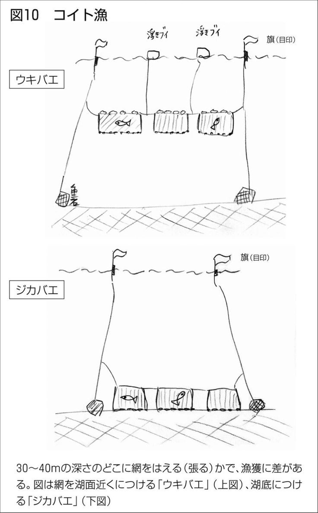
魚の種類によって習性も違うし、季節によっても回遊する深さが違います。ジカバエを別にすると、別に湖面から何メートルとか決まっているわけやないですから、七～八メートルの網を水深何メートルから何メートルまでに張るか、これはもう場数と勘に頼るしかありません。それをどう読み切ってどう網の位置を決定するか、楽しみでもあり苦労でもありますね。
コイトは、前日に網を入れて、翌朝の市場のセリの時間に合わせて揚げるひと晩勝負の漁です。網を仕かけるタイミングは日没間際がベストやといわれてますけど、網を仕かけ終わって帰ってくるまで、だいたい一時間くらいかな。
で、コイトは、魚を取り込んで市場に出荷してそれで終わりかというとそうやないんです。これからがまたひと仕事なんですわ。手ブラでもとりあえず湖水で網を洗って、家で干します。「網干し」というやつですけど、この網干しは日課です。
琵琶湖の漁で油で網が汚れることはありませんが、水アカがつきます。それを放っておくと、漁に影響しますねん。たった二時間、三時間でも網干しで網を芯から乾かすと、夕方網を入れるときに水アカがつきにくくなるんです。干さずにドボドボのままの網を入れると、すぐに水アカがついて漁にならんのです。
イオゴイトやモロコゴイトで使う網は三枚網で、真ん中の網はナカワタ、またはワタと呼ばれる身網で、両側の二枚の網は身網の補強と漁獲を上げるための網で、外網と呼ばれています。
コイトにはいくつか対象にする魚がいますから、その魚専門の網を使います。この網はそれぞれ網目の大きさが違います。網目のことをわたしらは「目合い」といってますが、この目合いがまた大事なんです。
フナでは一寸八分、一寸八分五厘、一寸九分、一寸九分五厘といった目合いを使いますし、モロコでは五分二厘、五分三厘、五分五厘、六分五厘、六分八厘といった目合いを使います。一寸は三十ミリ、一分は三ミリ、一厘は〇・三ミリやから、どれだけ細かい刻みがあるかよく分かると思います。
この目合いのなかから、時期、つかみたい魚の種類とサイズ、狙う場所に応じて使う網を決めます。たとえば、春先の見栄えのする大きいホンモロコは料亭で「旬のモロコ」として珍重されますから、値段がいい。佃煮や串焼きにするモロコならそれより小ぶりで十分ですけど、それなりの値段しかつきませんから数がほしい。大小どちらを狙ってもいいわけで、漁師がどっちを獲りたいかを決めるわけです。
複数の魚を相手にできる時期もあります。そのときにどの魚をつかみにいくのか、これも収入に直接結びついてきますから頭を使います。その場合、自分の得手不得手と魚の取引値との相談で、魚を決めますね。
ホンモロコのセリ値がキロ三千円、ニゴロブナがキロ五千円だったとすると、ホンモロコ五キロとニゴロ三キロは同じ値段になります。そのとき、ニゴロを三キロ以上つかむ自信があれば、イオゴイトをやったほうが高い収入になります。こんなん小学生でもできる計算ですけど、そうやってどの魚を狙うかを絞るわけです。
「今日はモロコでいこう」と決めたとき、モロコはフナより小さいですから、網から外す作業は大変になります。むしり取ったら商品価値が落ちるんで、できることならウロコの一つでも二つでも傷つけんように外したい。しんきくさい手間のかかる作業やけど、大事な商品ですんで丁寧にきれいに網から外すんです。
海の漁業者は、アジならアジ、イワシならイワシと決まってますやんね。琵琶湖の漁業者はいろんな魚種がいける。しかも、狙うサイズも、値段と相談して自分で決められる。獲れるか獲れんかを別にすれば、そこが海の漁師とは違うところ、琵琶湖漁師のおもしろさになるんかもしれません。
ここまで、琵琶湖漁業の主な漁法になっているエリ漁、沖すくい網漁、コイト漁の三つをあげました。これ以外に、琵琶湖では「チュウビキ」と呼ばれる「沖曳網漁」もおこなわれています。
わたしはいまチュウビキはやっていませんが、漁師になってしばらくの間はやっていました。当時の相棒漁師が船を降りた（漁師をやめた）ことと、エリ漁に誘われたこともあってこの漁からは手を引いてしまいました。
チュウビキで獲れるのは、一～三月のイサザ、八～十月半ばのヨシノボリ、十～二月のホンモロコ、十一～三月のスジエビなんかになりますね。昔はモロコ用の網は絹製、イサザとヨシノボリは綿製で別の網を使っていたそうですが、いまはアミラン製の同じ網を使うようになってます。ただ、さっきも話に出た目合い、網目やね、これがモロコ、イサザ、ヨシノボリ、エビの順番で細かくなっていきます。
チュウビキから漁師が帰ると、仲間からこんな声がかかります。
「今日、何カワかけてきたん」
「三（み）カワしかかけへんかったわ」
守山の漁師言葉かもしれませんけど、「カワ」とは、イカリを降ろしてから、網を入れて魚を取り込むまでのチュウビキの一工程を指す言葉です。一工程に一時間ほどかかりますが、漁獲が思ったほどなければ漁場を移動して再開します。だから、「三カワしかかけへんかった」ということは、場所を変えたかどうかは分からんけど、「今日は、三回しか漁をせんかった」という意味ですね。
チュウビキを分かりやすくいうと、船から曳く地曳網のようなもんというたらええでしょうかね。網の構造は、袋状のウオドリ（魚が入る部分）とその両側に長い曳綱がついてます。全長は六百メートルほどありますけど、ウオドリはほんま小さい小さい網です。
漁場につくと、ブイのついたイカリ縄を水中に沈めます。ブイはドラム缶ほどの大きさのスチロールで、見やすいように蛍光色が塗られていたり、自分のブイであることを示すための目印がつけられていたりします。
次に、そのブイに網がついた曳綱を固定して、船を円を描くように回しながら、元の場所にもどってきます。元の場所についたら、船をブイに固定して網揚げに入ります。だから、この漁は一人ではできん漁なんです。船を操る人間と網を降ろす人間の最低二人一組でやる漁になるんですね。
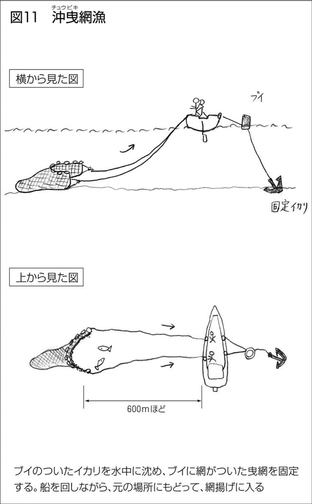
いよいよ網を揚げますが、このときイカリと網は船をはさんで反対側にあって、網を曳いても船が動かないようにイカリが引っ張ってくれるわけです。いまは油圧式のウインチで網を巻き上げるんで楽になりましたが、その前は手で手繰る方式（テグリ）だったため、大変な重労働でした。
チュウビキは「底曳網型の漁」になりますけど、外洋のトロール漁法とはまったく性質の違う漁です。琵琶湖の漁はあくまでも待ちぼうけの漁で、このチュウビキも魚探も使わんし、魚の群れ目がけて網を曳きまくる漁でもありません。
外洋のトロールなら、網で囲まれた部分にいた魚はそれこそ一網打尽です。ところが、このチュウビキは、曳綱を曳くとまず網が縮みます。それで、結局、ウオドリの前にいた魚だけが網のなかに入ることになって、トロールとは比較にならんほど少ない面積を対象にした漁になるんです。
わたしの漁の一年は、五月半ばにフナやモロコのコイト漁、それにエリ漁が終わり、六月からアユの沖すくい網漁がはじまって七月末に終わる。八月にはエリの片づけに入り、九月は秋モロコのコイトを少しやって、十月の声を聞くと、十一月二十日からのエリ漁の準備に入ります。エリ漁がはじまってしばらくするとフナとモロコのコイトがはじまり、また沖すくい網の季節がめぐってきます。
うちの漁師のはじまりは、祖父の末治郎です。そしてオヤジの要がいて、わたしですから、わたしが三代目になりますね。昔、琵琶湖近辺では半農半漁で暮らす家庭が多かったんですけど、うちは土建業もやっていて、オヤジの代から漁業専従になっています。三代つづいて〝ほんまもん〟といいますから、わたしの代でやっとうちは〝ほんまもん〟かな。全然、えらそうなことは言えんけど。
家は守山市今浜町というところにあって、琵琶湖まで四百～五百メートル、家のすぐ近くには野洲川が流れていて、野洲川で投網を打ったり、琵琶湖にシジミを獲りにいったり、ほんま小さなガキの頃から水で遊ぶことを覚えていましたね。
小学生の頃は、学校から帰ると、ランドセルを放り投げるやいなや、投網をつかんで野洲川に走ってました。「好きこそものの上手なれ」というのは本当ですね。毎日、投網を打っていると、だんだんきれいに網が広がるようになる。
上達して投網が思うように打てるようになると、水面にきれいな円を描いて落ちるようになります。ちょっとオーバーにいうと、芸術ですね、あれは。その網に魚がかかる。それが、子供心に何ともいえん快感やったんでしょうね。
当時、川の投網によくかかったのは、ハスです。ハスは大きくてもせいぜい二十センチほどの魚で、漁師が漁で狙うような魚とは違います。白身の淡泊な味の魚で、子供の頃は「またハスの塩焼きか」というくらいよく食べさされました。小骨の多いのが難点ですが、脂の乗る土用の頃は「土用バス」と呼んでいまでも食べてますね。
いまでも投網には自信がありますけど、小学校高学年の頃は、「坊主、えらい投網がうまいなあ」と本職の漁師からほめられていた覚えがあります。でも、それは漁というより遊びであったり、家の食事の材料を獲りにいってただけで、とても漁と呼べるようなもんとは違います。
漁の真似事をはじめたんは、小学校高学年になってからになりますね。まあ、小学生のことですから、漁といっても遊びに毛の生えたようなもんですけど、学校が休みのとき、よくオヤジに琵琶湖漁に連れていってもらいました。学校が休みになる前の日に、「明日、オレ、漁についていくで」というと、オヤジは必ずこういったものでした。
「ええけど起こさへんじょ」
「起こさへんじょ」というのは、ここらの方言で「起こさんぞ」ということで、「わざわざ起こしてまでは連れていかん。ついてきたいんなら、自分で起きてついてこい」とオヤジはいっていたんです。
漁に出かけるのは、夜中の二時とか三時です。どうしても琵琶湖へ一緒に漁にいきたいんなら、子供にとっては眠くてたまらないそんな時間だけど起きなければならない。いま思い出してみると、そういったときは必ずオヤジと一緒に漁にいってましたから、その時間には起きてたんでしょうね。起きていたというか、ついていきたい一心から、寝ずに時間がくるのをじっと待ってた、が正解かも。とにかく、それほど、琵琶湖にいくのが好きやった、楽しみやったということです。
琵琶湖までの四百～五百メートルの道を、ホンダのスーパーカブに乗せてもらっていくんです。荷台には道具を積んでますから、踏み台というかフレームに足を乗せて、ハンドルをこう両手でギュッとつかむわけです。
小学生の小さな身体で、ガタガタ道の揺れを抑えようと足を踏ん張りますよね。カブの構造をご存じかどうか知りませんけど、前輪ブレーキはハンドルについてますが、後輪ブレーキは足元にきます。
ある日、いつものように乗っていて何かの拍子にそのブレーキを踏んだんです。キキーッと急ブレーキがかかって、堤防下にもんどり打って転げ落ちた。堤防下は竹林になっていて、その根株で右鼻の下を三カ所ほど切りましたかね。
いまはヒゲで隠れてますけど、鏡でその傷を見るたびに、カブから転落したときのことを思い出します。大人になったのに、子供時代の傷だけは残っている。何か懐かしいやら、武田鉄也の歌やないけど、「はるばる遠くにきたもんだ」といった不思議な感じがします。
投網や漁について回って明け暮れた小学校、友達との遊びで過ぎた中学校、将来何になるかなど考えもせず送った高校。
強いていえば、「青い三角定規」というグループの歌がテーマソングになっていたテレビの教師物に影響され、学校の先生にあこがれれたかな。あと、消防士。「なんで消防士なんや」と聞かれても答えに詰まるけど、若いときにありがちななにかに影響された結果やないかと思います。
何を仕事にするか決めん宙ぶらりん、いまでいえばフリーター？
夢は先生か消防士。親から「漁師せえや」とも「漁師はやめとけ」とも言われたことがなかった。そのわたしが、琵琶湖の新米漁師になっていた。
オヤジが「小指の想い出」ならぬ「小指と家出」をしたことも、キッカケと言えば、そうなるのかなぁ。
突然、一家の大黒柱がいなくなった、そんな状況のときにも、オフクロはわたしに「好きにせえ」といった感じでした。でも、子供のときの魚遊び、小さいときから漁について回ったことからすれば、当然のように漁師になっていった。というか、オフクロと二人で漁に出るようになってから、琵琶湖漁師に一直線にのめり込んでいきましたね。
「漁師になるか、漁師にならんか」と迷った覚えもないし、「オヤジがいなくなって、オレが一家を支えていくしかない」といった悲壮感にとらわれたこともありませんでした。気がつくと船の舵を握っていた、気がつくと琵琶湖に浮いていた。これがほんまのところですね。
この間も、仲間の漁師から、「お前は何で漁師になったんや」と聞かれました。答えを見つけようとしても、どうにもうまい答えが見つかりません。「漁師が好きなんや、琵琶湖が好きなんや」と考えに考えた結果の答えをいいましたけど、何で漁師で生きていこうとしたのか、じつは本当に分からんのです。
無理に説明をつければ、とくに「なるぞ！」と決意せんでも、「漁師が好き、琵琶湖が好き」という率直な気持ちが琵琶湖漁師への道を選ばせてくれたということなんかな。その気持ちにウソも迷いもなかったしね。気持ちに迷いがあったら、漁師にのめり込めんかったと思います。
まあ、そんなわけで漁師への道を歩きはじめたんですが、オフクロと一緒に船に乗りはじめて、アッと驚きました。
オフクロはオヤジと一緒に漁にこそ出ていましたが、本職の漁師とは違います。わたし自身、オフクロが本職の漁師はだしの漁ができるとは考えてもいなかったし、それが当たり前やと思っていたんですが、その考えが完全に裏切られたんです。
漁についてそれほど知識はないと思っていたオフクロが、二人で船に乗って漁に出るようになると、漁場の選び方、漁具の仕かけ方に口うるさかった。「何でこんな細かいこと知っとんねん」と思うくらい、細かかったんです。
もちろん、わたしなりに、オヤジと漁に出たときは、オヤジの漁の仕方を観察してたつもりでした。目を閉じてついて回っていたわけでもないし、遊び半分でついて回っていたわけでもありません。しっかり両目を開き、両耳を傾けていた。
漁師になりたてでも、それなりの自信がありましたから、「今日はあそこいってみる、この風やったらあそこがええ」と自分でポイントを探し、網を仕かけます。自分としてはなかなかのポイントにいい網が張れたと思っていると、それまで黙っていたオフクロから、よくこんな言葉が投げられたもんです。
「こんなとこで、何つかむねん」
そういわれても、こっちにしてみれば、ニゴロブナを獲るために船を出し、そのために網を仕かけているわけです。仕かけ場所にも自分なりの自信はありますから、失礼な話です。カチンともきます。
「何つかむねんて、ニゴロに決まっとるやんけ」
関西の方なら理解できるでしょうが、「何つかむねん」という表現は柔らかそうに見えて、その実はキツい言葉です。むずかしくいうと、〝婉曲な全否定〟といったところやね。「ここに網を仕かけても魚はつかめへん」という「教育的指導」以外に、「いったいお前は何を考えてんのや！ アホ」という「キツい一本」が含まれているわけです。
「好きなこといいくさって。ここでええんや！」とあまり上品ではない言葉を返しながら、胸のなかでは「つかめるかつかめへんか、そんなん、網入れんと分かるかい！」と叫んでましたね。
自分の決めた場所に網を入れてみるものの、結果はオフクロのいう通りでした。結果を見たらどっちの意見が正しいかは一目瞭然で、わたしは頭をかくしかないことが多々ありました。魚が話せれば、「こんなとこに網張るの、どんな漁師やねん。こんなんでつかまる魚おらへんで。どうせ新米やろ」と笑っていたかもしれません。
もちろん、いつも手ブラというわけじゃないです。自分の判断で獲れたこともありましたが、頭をかくことのほうが多かったのは事実です。まぁ、ずいぶんたくさんの琵琶湖の魚に笑われたんとちゃいますか。
オフクロと一緒に船に乗ってた時間は、そう二年ほどでしたかね。
その間、「こんなとこに仕かけて、何つかむねん」と何回も何回もいわれ、何回も何回も頭をかきながら、魚に笑われながら経験を積んでいきました。
そのうちだんだん「こんなとこに仕かけて、何つかむねん」とオフクロがいわんようになっていきました。同時に漁獲も上がりだして、ようやく漁師らしい網の張り方も覚え、漁師らしい顔つきにもなったんやね。ええ格好していうと、琵琶湖を手の内に入れだした、琵琶湖の魚と話ができだしてきたということですかね。
いま三人一緒に漁に出ていたときのことを思い出すと、ここぞと思うポイントにオヤジが船を操っていって、オヤジが「今日はここ」という場所に網を入れていただけでした。オヤジはどこに仕かけるかの相談をしたことはなかったし、オフクロは「ここでいいのんか」と疑問をはさむことも、「ここはやめたほうがいい」と反対したことも一度もなかった。オフクロはただ、オヤジの指示に黙って従っていたんです。
こんなときに使うべきたとえと違うかもしれんけど、「夫唱婦随」の漁というわけです。しかし、よく考えてみたら、オフクロはただ「夫唱婦随」やったわけやないんですね。オヤジと一緒に漁をしながら、一人前の漁業者の知恵を蓄えていた。身につけていた。
オヤジの漁を見ながら、「こんなところで、何つかむねん」と自信を持っていえるまでの漁業者としての勘と知識、現場の目を養っていた。すべて経験です。そこがすごい。
いま仕事の経験とか勘をバカにする風潮があるけど、わたしは違うと思います。経験や勘がなくても、仕事はできるかもしれません。でも、仕事で求められるものというか、ものごとの本質をパッと把握するのは、やはり経験とその経験で磨かれた勘やと思いますねん。コンピュータも学習するでしょうが、その学習で要点をパッとつかんだり、勘を磨いたりはできませんよね。
当時のオフクロと同じような年齢になったいま、「たいした漁業者やったんや」と感心せざるをえません。
琵琶湖の漁師は、夫婦で漁に出る漁師が少なくありません。
いま旦那と一緒に漁に出ている奥さん連中も、多分、うちのオフクロと同じやないかと思います。口にこそ出しませんが、長年の漁経験が身体にぎっしり詰まっているはずです。そうした人から見れば、まだまだわたしなんか尻の青い漁師に見えるんやと思います、日々反省ですね。
オフクロと二年一緒に船に乗ってたけど、「どこに網仕かけたらいいやろ」と相談することはなかったですね。意地っ張りなところがあって、聞けば漁獲が上がることは確かやろうけど、「オレも漁師やぞ」というプライドがあったんやろと思うね。
それにオフクロも偉いというか、「お母ちゃんのいうこと聞け」ともいいませんでしたしね。琵琶湖で漁師やっていくんなら、漁師に必要な知恵と勘は自分でつかめ、ということやったのか、話して聞かせても身につくような知恵とは違うことをよう知ってたんでしょう。
それまででも当然、自分なりに努力もしていたし、研究もしてました。
オフクロに、「こんなとこ仕かけて、何つかむねん」といわれた場所にしても、それなりの根拠はあったんです。
オヤジと三人で漁に出ていたときにオヤジが仕かけた場所もあれば、自分なりの経験と勘から割り出した場所もあります。自分なりに割り出した場所は、琵琶湖を吹く風や水温、水の流れ、それに季節などから必死に考え出した結果です。
でも、風一つとってもいろいろあります。それこそ頬をなぶるような風もあれば、サーッと湖面を掃くように吹く風もある。細かい波頭を立てるような波もある。吹く方向もさまざま。北寄りの風といっても、北々西の風もあれば、北々東の風もある。そんなきちっと分けられん風もあります。
そうした湖上のわずかな風の違いが水面下でも微妙な違いになり、魚は肌でその変化を感じ取るはずです。それに水温、水流、季節のわずかな違いも加わる。そうしたいろいろなことを考えると、わずか一～二センチの網の向きの違い、一～二センチの仕かける深さの違いが、とてつもない大きな影響を持つことになります。
漁師になって一、二年当時のわたしは、そこまで考えが及ばんかった。いわば、新米漁師の浅知恵で魚を見ていた。本当の漁師というものは、魚の気持ちを知るというか、「オレが魚やったら、こうする。こうしたい」という魚の気持ちが分かるようにならんと無理なんですね。
一人で船に乗るようになった頃には、もう自分としては一人前のつもりでおったんです。一人で何かやっていると一人前のような錯覚に陥りがちですけど、それと同じようなもんですね。けど、まだ半人前やった。
で、漁師として一人前になれたと感じたのは、みんなと同じように魚がつかめるようになったときやないんです。「これでお前も一人前や、立派な琵琶湖の漁師や」と認められたと実感したのは、先輩漁師からの呼ばれ方が変わったときなんですわ。
人間の名前の呼び方は、おもしろいですよね。「さん」が「君」になったり、「君」が「さん」になったり、「君」や「さん」が取れたりついたり、そのつど人間関係の変化と人間の感情の機微が投影される。わたしの場合は「直弘」と名前を呼んでもらうこと、それが一人の漁師として認められたことやと思います。
うーん、いつ頃からかな、一人で乗りはじめたのが二十二歳くらいやから、三年はすぎていたやろうか。三年経ってようやく一人前の漁師になれたんやね。
二十歳そこそこの人間が漁師になったんですから、周りは全部先輩漁師です。いまだに守山の漁師でわたしは一番若いほうですけど、漁師になりたての頃はほんま、いろいろな呼び方をされてました。
オヤジの名前が要だったところから、「要ちゃんとこの兄ちゃん」とか「要ちゃんとこのボン」と呼ばれたことが多かったね。「ボン」といっても、関西弁で裕福な家庭の子供を指す「ボンボン」やないんです。ただの「子供」を意味する「ボン」です。
それに、いまでも田舎には各家庭に屋号がついている地域がありますよね。滋賀県のこの地方にも屋号のしきたりがあって、うちの屋号は戸田末いうたんです。琵琶湖の漁師をはじめた祖父の名前が末治郎だったことによりますけど、そこから「戸田末んとこの兄い」とか「戸田末んとこのボン」と呼ばれることもありましたね。
「要ちゃんとこのボン、今日はどうやった。魚、つかめたか」
こう聞かれると、「はあ、ボチボチです」なんて受け答えしてましたし、顔を知ってもらうまでに「どこの者や」と聞かれたときは、自分で「要んとこの長男坊です」とか「戸田末んとこの者です」なんていってましたね。船に乗ったら一人前の顔をしていたんですけど、漁師としてどこか頼りない自分、まだ本物の漁師になってない自分をどこかで自覚していたんでしょう、その自信のなさがこんな受け答えになっていたと思います。
それがいつの間にか、「直弘」になった。サラリーマンでいうと、「株式会社・戸田要の社員・直弘」とか、「戸田末治郎物産の社員・直弘」から、「琵琶湖漁師・戸田直弘」という名刺を使ってもいいと許されたんですね。
それが漁獲量と関係なかったというところがおもしろいです。わたしは、どんな仕事でも、その業界で生きていくだけの専門知識と姿勢が必要やないかとも思うんです。たまには大きな仕事もするけど、その知識と姿勢がない人間は半人前。琵琶湖の先輩漁師たちは、そこをきっちり見ていた。で、「これならそろそろ」ということで、「直弘」と呼んだ。先輩の目というものは、さすがに厳しいもんです。
「直弘」と名前を呼び捨てにされるまで、たくさん失敗しました。魚にどんだけ笑われたんか、想像もつきません。
よく成功経験と失敗経験とどちらが役に立つかという話がありますが、漁師にかぎらず、やはり失敗経験のほうが大事やないかと思いますねん。
どこぞの偉い人のようなむずかしいことはいえませんけど、漁師のわたしの経験でいわせてもらえば、まず成功することよりも失敗することのほうが圧倒的に多い。だから、失敗したときの風、気温、水温といった条件は分かりやすいし、何かをつかみやすい。
それに成功いうもんは、いろいろな条件が満たされてはじめて成功につながるんやと思います。とくに大成功はそうでしょう。ということは、前に成功したように成功しようと思たら、同じ条件が揃わんとできんことになりますわね。
琵琶湖の漁の場合、魚も風も水温も全部自然ですから、まったく同じ条件が揃うことを期待していたらえらいことになります。いつまで経っても船は出せません。
もっと始末が悪いのは、成功したとしても、なぜ成功したかの正体はなかなか見えません。うまくいったときは、何や分からんけど結果がよかった、ということやないかと思うんです。思い当たることがあっても、それが本当に成功した原因と信じていいもんかどうか判断のつかんところもあります。
失敗からは、次の失敗を招かない教訓を読み取ることができますけど、成功から次の成功につながる教訓を読み取るのは至難の業です。成功から次の成功につながる教訓を読み取ることができたら、成功者はずっと成功者でいられます。
けど、そんな人はいませんわね。成功した人が、次でも必ず成功するとはかぎらない。だから、失敗から何を学ぶのか、何を読み取るか。それが人生をおもしろくする要素やし、むずかしさやないかとわたしは思うてますねん。
多少気取ったいい方をさせてもらうと、成功は結果、失敗はプロセスちゃうかな。結果を変えることはできんけど、プロセスは変えられる。だから、失敗から学んで、失敗を生かした努力と反省で次に成功することもある。
それが分かるのに結局、わたしは三年間かかったいうことです。先輩たちは、わたしが失敗をどう生かすか、じっと見てたんかもしれません。漁師には毎日の漁獲高という数字がついて回りよるけど、数字がよかったから一人前ということやないんです。
わたしの船を見たら魚が逃げるようなことはないけど、漁獲高も乱高下せんといい線いくようになってくる。ホームランか三振かでは漁師はあきません。どんなに調子が悪くても、そこそこの数字を残せるのがプロの漁師やないでしょうか。そこでやっと「魚に笑われんような漁師になれた」といっていいのかもしれませんね。
いま「琵琶湖の漁師してる戸田です」と自信を持っていえるようになって、この仕事を選んで本当によかったと思ってるんです。
友達に、サラリーマンになった人間も少なくありません。そういう人間と話すと、「お前はええなぁ、好きな琵琶湖で漁師ができて。最高やな」といわれます。
ほんま、その通りやと思ってます。そりゃ、外来魚問題もある、３Ｋといわれるような職種でもある。けど、漁師にはリストラもない、上司におべんちゃらを言う必要もない、自然が相手の大自然ビジネスや。自然との対話、魚たちとの対話、自分の力量と判断がストレートに成績にはね返ってくる。それが楽しいですやんか。
その楽しいということの基礎が、心底から漁師という仕事が好き、琵琶湖が好きという気持ちなんやね。好きでもない仕事で充実感が得られるはずはありません。
たしかに、いま十八～十九歳なら、違う選択をした可能性もあります。琵琶湖に対する思い入れは一緒でも、いまの収入や生活を考えたら昔のように漁師の道を選んだかどうか。悩むかもしれませんけど、やっぱり漁師になったんと違いますやろか。
いまわたしに、その年頃の息子がいたとして、「琵琶湖で漁師したいねん。琵琶湖で船に乗って生活していけるんなら、琵琶湖で漁師したい」といわれたらどうするやろうか。そういう息子がいたら、「そんなもん、飯食うていけんぞ」と反対するかもしれんし、これは想像やけど、他の琵琶湖の漁業者の家庭では、そんな会話が交わされているかもしれませんね。
そやけど、やっぱり、息子のしたい仕事をさせるでしょうね。
親のわたしが、「自分の好きな仕事ができて幸福や、自分の好きな仕事をしていられるのが人生で一番の幸福や」と思っているんです。どんなことがあっても息子の人生は息子のものですから、息子が好きでやりたいと選んだ仕事なら、その責任は自分で負えばいいだけのことです。格好つけるわけやないけど、自分が納得できる仕事はそうして決まるんと違いますか。わたしの場合、なるべくして琵琶湖の漁師になった。だから琵琶湖漁師として納得した人生が送れている。
自分で選んだ仕事で成功するか失敗するか、運もあるかもしれんけど、あとは本人の気持ちでしょう。人生なんて、順風のときもあれば逆風のときもある。
「魚に笑われん漁師になれた」というと、「直弘、えろう立派になったなぁ」といまでも先輩漁師にこづかれるかもしれません。そんなときでも「おかげさんで」といえるくらいの自信は持たんと漁師はできませんし、それくらいの自信はありますけど、漁師である自分への大きな不満というか、許せへんところがありますねん。
わたしも二十年漁師やってますから、普通の人よりは顔は日焼けしています。けど、先輩漁師の日焼けとはどこか違うんです。先輩漁師の色は見事な赤銅色で、「これぞ琵琶湖焼け」というような感じですが、何せ年輪が違いますから、色の深みとツヤが違います。
日焼け具合もそうですけど、もっと「許せへんところ」というのは、手です。
先輩たちの手は、ほんまに漁師の手です。漁師やから漁師の手をしているのは当たり前といわれるかもしれんけど、漁師の手というもんはそう簡単にはできあがりません。
野球選手なら野球選手をやってきた手、工場なら工場で働いてきた手という味わいというか、手に仕事の顔が出てくる。同じように、長年漁師をやってきた先輩たちの手は、手が漁師の手をしてるんです。一緒に漁に出ている年配の手を見ると、「いい手しとんな、ごっつい手しとんな」と思いますねん。
手が「オレは漁師やと叫んでいる手」とでもいえばいいんでしょうか、掌が小さくて、関節がゴツゴツして、手の甲が真っ黒でシワクチャの手です。見るからにいかにも無骨な男の手で、「若い女性の前では思わずうしろに隠したくなるような手」ですけど、それが漁師の本物の手やと思います。
それに比べると、二十年も漁師やっていながら、わたしの手はまだ「オレは漁師だ」と叫んでない。怠けているわけでもないし、オヤジもこんな手やったから体質なんやと思いながらも、漁師仲間から「直弘はかわいい手しとんのぉ」といわれると、穴があったら入りたい気持ちになります。恥ずかしいを通り越して、許せんような気にすらなります。
普通にいえば「きれいな手」になりますけど、これは漁師の勲章やないです。漁師の勲章は、「漁師であることを叫ぶ手」やとわたしは思います。
ちょっと古臭い考え方かもしれませんけど、身体を使う仕事をしていれば、それなりの手になりたいもんです。漁師であれば、漁師であることを叫ぶような手、誇れるような手になりたい。
「琵琶湖で漁師やってんねんや！」と叫ぶような手というと、思い出すのは「カイツブリの常さん」の手かな、常さんの手は本物の手でした。もう漁師以外の仕事は考えられんほど、漁師の手でした。
カイツブリというのは滋賀県の県鳥にもなっている水鳥で、ハトくらいの大きさのかわいい鳥です。白い腹で、羽の色は夏場は暗褐色、冬場には栗赤色に変わります。琵琶湖ではヨシ地帯を産卵場所にしていたんですけど、湖岸の開発でヨシが少なくなったせいか、最近ではめっきり姿を見かけなくなりましたね。
常さんはこのカイツブリの名を渾名にいただいたわけですが、その常さんも年には勝てず、カイツブリ同様、漁をする姿を見かけなくなりました。なぜ常さんが「カイツブリの常さん」と呼ばれるようになったのか、わたしが漁師になったときにはもうこの渾名がついてました。たしか、渾名の由来を誰かに聞いたと思うねんけど、その返事はこうでしたね。
「いっつも琵琶湖に浮いとるやんけ」
カイツブリという名前は、「搔いつ潜りつ」を略したところからきたと聞いたことがあります。「搔いつ潜りつ」が本当にカイツブリになったかどうかは別として、ほとんど空を飛ばん鳥で、水面に浮いているか、潜って小魚を漁っている鳥です。
常さんの船はみんなよりひと回り小さかったし、「また常さんがおらん。こんな時間まで何してんねんやろ」と思うときには、必ず琵琶湖に浮いてました。また、コイトは日没寸前に仕かけて早朝に網を揚げるように、漁には時間がだいたい決まっています。「こんな時間に誰が船出すねん」と思うような時間帯に出ていく船には、焦げた顔のゴツい手の常さんの姿が必ずあった。暇があれば船を出し琵琶湖に浮いていた。
ところで、常さんは、まともに答えてくれないおっさんでしたね。
「昨日、あそこに網仕かけとったけど、ましやったか」
「アカン、さっぱりや。アカン、アカン」
こう手を振るものの、あとで伝票を見ると、守山漁協でトップの水揚げだったこともありましたね。
常さんが自分の渾名を気に入っているのかどうかは聞き漏らしましたが、琵琶湖に浮く「カイツブリの常さん」を見ることはもうないでしょう。湖面に浮くカイツブリの姿をたまに見かけるたび、「常さんもああやってよう浮いとったな」と懐かしく思い出す漁師の一人です。
この「カイツブリの常さん」だけやなく、先輩漁師の手はみな、わたしにすれば羨ましい「漁師を主張する手」です。
そういえば、もう一人、鳥の渾名をもらった漁師さんがいてますわ。渾名を「ゴイサギの光ちゃん」いいます。ゴイサギは中型のサギで、漢字では「五位鷺」と書くらしいですね。何でも醍醐天皇が神泉苑の御宴を開いたときに五位の位を与えたとかで、この名前になったと聞いたことがあります。
漁師仲間では、先輩漁師でも「ちゃんづけ」で呼びますけど、さすがに「ゴイサギの光ちゃん」とは呼べません。「光ちゃん」と呼んでます。口ひげがトレードマークの五十二歳現役漁師。
同じ水鳥でも、カイツブリや川鵜、カモなんかは魚を追いかけて獲ります。ゴイサギも魚を主食にしていますけど、魚を追いかけへんのです。動かんで片足でじっと立って、近くに泳いでくる魚を狙いすましてクチバシでサッとつかんで食べる。サギ科の特徴なんか知らんけど、そんな習性を持つ鳥です。
これもようつけた渾名やと思いますが、「ゴイサギの光ちゃん」は、いったんここと決めた漁場からなかなか離れませんねん。コイトでニゴロブナを狙うとしたら、決めた場所で最初の日が手ブラやったら、次の日は違う場所に網を入れるのが普通です。けど、光ちゃんは、二日目も三日目も連続で手ブラでも、そこに網を入れる。ゴイサギが魚の寄ってくるのを待つように、狙いの場所に魚が回ってくるのを同じ場所でじっと待つんですね。
アユすくい網漁なら、いいマキがあった場所から離れない、離れない。
「光ちゃん、いつまでも同じとこにアユはおらんで」
こういっても、「前なぁ、あこよかったんや」と、また同じ場所に船を出す。けど、よくしたもんで、何日かしたらその場所でニゴロをつかんだり、いいマキに当たることになる。
考えてみると、「カイツブリの常さん」にしても、「ゴイサギの光ちゃん」にしても、自分なりの漁のスタイルを持っているということやね。わたしが魚に笑われながら、いろんな失敗を繰り返しながら勉強したことを、先輩漁師もやっぱりやってきた。その経験から、自分が一番いいと思う漁のスタイル、自分に一番合った漁のスタイル、自分が納得できる漁のスタイルを編み出していったということやね。
そうなると、「漁師を叫ぶ手」が漁師としての輝く勲章やというたけど、渾名も一つの勲章といえるやろね。とくに、魚をつかむ鳥の名前が渾名につくのは、漁師にとってほめ言葉に間違いないわね。
で、「お前の渾名はなんや」と聞かれそうですけど、わたしはまだ渾名をもらってません。あるいは、何かついているかもしれんけど。
琵琶湖は、漁と人生を教えてくれただけやないです。琵琶湖でも、忘れた頃に漁師が亡くなります。夏には水深一メートルもないところで、遊泳者が溺死したりもします。琵琶湖にはこんな怖い一面もあるんですが、その怖さも十分に骨身に染みて教えられました。
漁師は琵琶湖の怖さを知り抜いていますから、無謀な漁はしません。漁船もどんどん改良されて、横揺れにも強い構造になってきています。ただし、冬の琵琶湖では、漁船が転覆するような強い風が瞬間的に吹いて、改良された漁船でもたまらずに転覆する事故はなくなりません。漁師が亡くなるのは、冬の転覆事故によるものなんです。
わたしも一度だけ、「これはあかんかもしれん」と思ったことがありますねん。
彦根港から帰る途中、近くの漁港に入ることもできんし、「もしものときにつかまれるものは何かないか」と操舵室のなかを探しましたよ。
「琵琶湖は怖い面がある」と心底思ったもんです。
風以外にも、琵琶湖には怖い顔があるんです。
竹生島の少し東の水域で、置いてあったカッパが水に落ちたんです。「ああー、カッパが落ちた」と拾いに船を回すわずか数分の間に、湖中から誰かが引きずり込むかのようにカッパが吸い込まれていく。
カッパなんかそう沈むもんと違います。この辺りの水域では水温の高低差ができていて、対流が起きていたためにカッパが湖底のほうに引きずり込まれたんですね。
それに、夏の暑い盛りの沖すくい網漁では、あんまり暑いんで湖水でひと浴びしようと水に入ることがあります。「水も沸いてるなぁ」と思った次の瞬間、心臓マヒを起こすような冷たい水に包まれたりします。漁師やから泳ぎには自信がありますが、こんな冷たい水で心臓マヒを起こしたら、これはもう一巻の終わりです。
よく海の漁師にはジンクスがあるといいます。琵琶湖の漁師にも一つだけジンクスがあります。漁師の弁当はお握りが多いですけど、そのお握りのなかには梅干しが種ごと入ってますね。握り飯を食べたあと、琵琶湖の漁師はその種を絶対に湖に捨てません。梅干しの種を水中に捨てると、種は浮いてきません。それに引っかけて、何かあったときに浮いてこんようになるからなんですね。
まぁ、毎日、琵琶湖で船に乗ってるからいろいろと琵琶湖の怖い顔が見えますけど、たまに遊びにくる人で琵琶湖をなめてかかる人はとんでもない目に遭いますね。これまでに何人か、危機一髪の人を救助した経験があります。
最近では七年前の七月十二日やね、ちょうど台風が昼に琵琶湖地方を通ったことがあったんです。そのときはアユの沖すくい網漁に出て、琵琶湖の西岸の高島というところに船を置いていたんです。翌日、どうしても守山から出漁せなならんことがあったんで、台風が通過してから高島を出ようとしたんです。
友達から、「直ちゃん、船ここに置いときーな、まだ危ないで、ワシが車で送ったげるがな」といわれたのを振り切って船で帰ろうとした。
「何かあったら電話しいや、気ぃつけてな」
船で航行中に何かあったら、電話なんかできるはずありません。けど、とにかくそのときはこういって別れました。強い東の風が吹いていたので、西岸ルートは避け、高島から沖島を経由してできるだけ東岸に近い水域を通って守山まで帰ることにした。これならいけるという判断で高島を出たんですが、よそ見できないほどうねりは高かった。
人間というのは、変なときに変なことを考えるもんですね。琵琶湖で一番東西の広いところを突っ切っていたとき、ふと胸騒ぎというか、一つの考えが走ったんです。
「こんなときに、ウインドサーフィンやらいうて出とる連中おらんやろな。こんなとこ流されとったら死ぬで」
そう思ったときですねん。波間にポツンと何か見えたんです。
「ええっ、ええっ」
目を疑ったけど、明らかにウインドサーフィンのボードだった。そのボードに若い女の子がしがみついている。見てしまったものは仕方がありません。荒れる波のなか、ゴツンコせんように慎重に慎重に近づいて、声をかけた。
返事はないが、手がかすかに動いてる。船をあまり近づけるのも危険なんで、身体の近く目がけてロープを投げましてん。カウボーイじゃあるまいし、そんなうまいこといきません。六回ほど投げて、やっと小脇のところにロープが届いた。
「そのロープ、何とかつかんでーな！」
叫ぶと、モゾモゾと腕が動いて何とかロープをつかむ。必死でロープを手繰り寄せて、何とか女の子を船に揚げて、ついでにボードも揚げました。わたしの着てたもんで暖を取らせて、とにかく守山まで帰りましたんや。話を聞くと、昼ご飯を食べてすぐに鯖江を出たといいましたから、三時間以上は漂流していた計算になります。
そのときの風具合を考えると、しがみついてるボードは東からの風で西にいきたい。けど、湖中に沈んでいる身体がちょうどキールの役目をして、波から下の身体は東にいこうとしていた。それで、どっちにもいかれずに、琵琶湖の中央で三時間漂流することになったんですわ。日没まであと一～二時間ありましたけど、そのときわたしがそこを通りかかっていなければ、それで辺りを見回さなければ、間違いなく亡くなっていたでしょうね。
その他には、十四～十五年も前のことやろか、湖岸から一キロほど沖の辺りで、ウインドサーフィンのボードにつかまっている男の子が浮いてたんです。近くにセイルも見当たらんし、動く気配もない。
その日はいい天気で、遭難するような天気やなかった。「何してんのやろ」と気にはなったんですが、一度は見送った。でも、やっぱり気になるので振り返って見ると、さっきとまったく同じ状態でピクリとも動かへん。「これはやっぱり何かあった」と思って船を近づけると、もう顔が土気色になりかけてるんです。それで慌てて船に救いあげて、近くの浜まで送っていって一命を取り止めたことがありました。
あと、コイトを仕かけに出たとき、岸から数キロ離れたところにカップルのモーターボートが無灯火で浮いてたことがありました。コイトは日没寸前に網を仕かけるのが一番いいタイミングですから、もう少し時間が経つと琵琶湖がすっぽりと夕闇に包まれてしまう時刻です。
そんな時間に無灯火は非常識ですから、何かあったのかと思って「どうしたんですかぁー、大丈夫ですかぁー」と声をかけると、「大丈夫でぇーす」と返答があって、わたしはコイトを仕かけに漁場に急ぎました。一時間か一時間半ほどで仕かけ終わって帰ってくると、さっきのところにまだモーターボートが浮いている。
「さっき大丈夫といったから大丈夫だろう」とは思ったんですが、「本当に大丈夫なんですかぁー」ともう一度聞いたら、今度はこういうんです。
「助けてくださぁーい。ボートが動かないんでぇーす」
これも仕方ありません。わたしの漁船にボートをくくりつけて、近くの漁港まで送り届けました。無線を積んでれば救助を呼んでいたでしょうから、無線もなかったはずです。あのとき、わたしが帰りに違う道を通っていたら、あのカップルはどうするつもりだったんでしょう。
亡くなられたり、ケガをされたりすることは気の毒とは思いますが、琵琶湖をなめたり甘く見ると、とんでもない目に遭います。琵琶湖では大いに遊んでほしい。けど、それなりのマナーと注意は払ってほしい。そうしないと、取り返しのつかないことになる。琵琶湖の怖さを一番よく知っているのが漁師で、その漁師が命を失うこともあるのが琵琶湖なんです。これだけは絶対に覚えておいてほしいことです。
何とか一人前の漁師になって、「琵琶湖の漁師してますねん」と胸を張っていえるようになったいま、琵琶湖の漁師はとんでもない問題とぶつかってます。それが外来魚、とくにブラックバスとブルーギルの食害です。
ブラックバスを擁護するような人と話すとき、「琵琶湖の在来魚を追いつめる魚や。アユやモロコやエビを食うとんのや」といっても、「バスやギルが何を食っているか分からんやろ」とか、「琵琶湖の魚を食い尽くすことはないやろ」という人がいてます。学者先生のなかには、「ぼくの統計ではこうなってる」と数字を出す人もおられます。
向こうがそういうなら、わたしら漁師は、とにかく実地、実感、証拠でいくしかありませんやん。「そうやない。こんな事実があるんや」と反論したいから、バスやギルの大きくなった腹を割いて、こいつらが何を食っているかよく調べてみるんですわ。
琵琶湖の漁師には、「きんまい」という表現がありますねん。それで、フナでもコイでも、アユでもモロコでも、腹がふくよかな魚を「きんまい魚」といいますし、「きんまい腹しとんなぁ」と表現したりもします。まぁ、「見事な」といった意味やけど、バスやギルのそんな腹を見ると、「何ときんまい腹してくさんな、このバス」とか「このギル、きんまい腹してくさる、何食うてけつかるねん」と、少々汚い言葉になります。
で、北湖のほうに漁にいったときにかかったバスやギル、南湖の外来魚駆除の漁で獲ったバスやギルのきんまい腹を割くんです。まぁ、驚きますよ、ほんまに。
北湖のバスの腹には、わたしらが漁をするアユやホンモロコが詰まっています。
「お前ら、オレらと同じ舌持っとんのか。食うて美味しいの、分かるんかい！」
思わず、こういいたくなります。琵琶湖のアユは成魚でも十センチ程度のコアユやし、モロコも小さい魚です。頭の骨まで軟らかいし、ウロコもアユはほとんどないし、モロコのウロコも柔らかい。わたしら人間でも美味いんやし、あいつらにしても美味いんやろね。
逆に、南湖のバスの腹を割くと、「こんなもん食わんならんのか！」とびっくりするようなものが出てきます。出てくるのは殻のままでまだ消化されてないアメリカザリガニ、ヤゴ、疑似餌のワームなんかです。ときには、ギルの稚魚も入ってます。
ザリガニなんかハサミがあって食いにくいでしょうし、ヤゴなんかどう見ても美味いとは思えません。ワームは魚が寄ってくるような匂いがついてますから食べるんでしょうが、北湖のバスと比べると南湖のバスの食生活は貧しいのひと言です。天と地、雲泥の差があります。
どこかの池ではバスが入った途端、ヤゴがいなくなって絶えてしまったという話を聞いたことがあります。「ほんまかいな」と思ってましたけど、南湖のバスの腹からヤゴが出てきて、その話を信じる気持ちになりました、ほんまに。
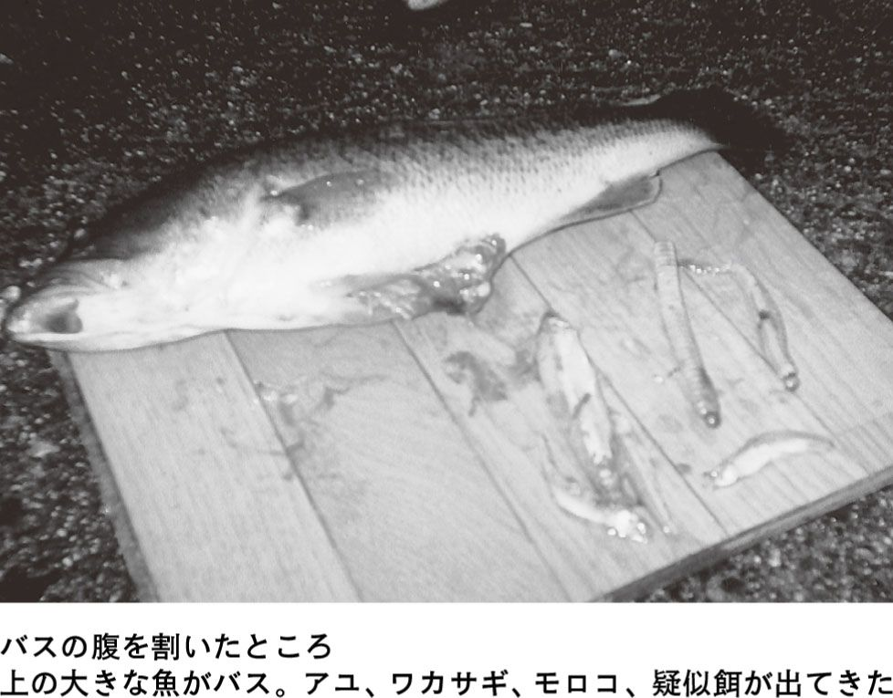
バスは北湖と南湖で食べとるものがえらい違うけど、ブルーギルのほうはどう見ても主食はエビですね。いままで腹を割いたギルは、北湖・南湖を問わず、全部が全部といっていいほど腹のなかにエビが詰まってましたからね。
琵琶湖の漁師も、エビタツベ漁やエリ漁でエビを獲りますけど、最近は獲れなくなってきてますねん。エビタツベ漁なんか、最近ではやる漁師を見かけなくなったほどですけど、ギルはどこかでエビを見つけて食うとんやね。
琵琶湖の漁師は、プラスチック製のタツベや古代漁法でエビが入るのを待ってますねん。それでエビが獲れなくなってきているのに、エビを追いかけ回すギルは腹一杯エビを食べている。エビが詰まったギルのきんまい腹を割くたびに、「お前ら、ええ加減にせえ」といつもいいたくなりますねん、ほんまに。
農林水産省が出したエビの漁獲数字を見ると、平成七年が三百トン、八年は二百七十三トン、九年がちょっと増えて三百五十七トン、十年がまた減少して二百七十五トン、十一年はなんと百四十九トンにまで減ってます。
エビタツベ漁の数字だけを見ると、平成七年が七十五トン、八年は七十トン、九年がやっぱり少し増えて九十七トン、十年が七十八トン、十一年は激減して四十四トンしか獲れてません。
十二年の数字はまだ出てませんけど、減っていることは確実やと思います。これだけエビの漁獲量が減ったのは間違いなくギルのせいです。わたしら漁師はみなそう確信してますし、ギルの腹を割いてみればそうとしか考えられません。
一時、「バスとギルは共食いする」という話がありました。
県議会の議員さんが外来魚の視察に見えたことがあって、そのとき、守山漁業協同組合の北村組合長から、「直弘、お前も外来魚対策で頑張ってるから、一緒にどうや。議員さんに意見を述べられるかどうかは分からんけどな」と誘われたんです。
ある議員さんから、「どんなもの食うとるの」という質問が出て、南湖で獲れたきんまい腹をしたバスを五、六匹割きましたんや。すると、ギルが出てきた。
「おうギルや、バスはギルを食うとんのか」
「食うとんのか」という発言に、「食べてくれてるのか」、もう少しいうと、「ありがとう」といったニュアンスを感じましたんで、「違いますねん、これを食わんならん状況にまで、南湖は追いつめられてるいうことですねん」と、思わず言葉が出ました。
議員さんの前で割いたバスの腹から、ギルが出た。わたしのこれまでの経験では、ギルの腹からバスの稚魚が出たこともあります。これだけを見ると、琵琶湖の二大外来魚が食う・食われるの共食いをやっているように見えることは確かです。ただギルの腹から出るバスは、孵化して間もないような稚魚で、数も知れてます。
わたしは何が怖いかいうと、バスは生まれてわずか数週間で一センチくらいの大きさになります。その小さなバスの稚魚の群れを、親バスはしっかり守ってるんですわ。子バスが泳いでいるその下を、三十センチも四十センチもある親バスがピタッとついて護衛してるんです。こうなると、バスの稚魚の生存率はめちゃくちゃ高いでしょう。それが一匹残らず成魚になる。こんな怖い話はありませんよ。
親バスにしっかり護衛されたバスの稚魚の群れに、ギルは突っ込まんでしょう。だから、ギルがバスの稚魚を食ういうても、親バスとはぐれた稚魚を食うだけなんです。
どこの記録か忘れましたけど、バスは一年で二十六センチになるそうです。一年で八センチ成長するといいますから、三年目にはもう四十二センチになります。食に困らない琵琶湖なら、成長はもっと早いかもしれませんし、どんどん卵を産みよる。バスは減らんと、もうどんどん増えるだけになりますわね。
バスと違って、親ギルが子ギルを護衛しているところは見たことがありません。それだけにバスはギルの稚魚を食いやすいかもしれませんけど、ギルの絶対数が違いますねん。琵琶湖にはもう十億匹単位のギルがいる、とわたしは思ってます。いくらバスがギルの稚魚を食ういうても、十億匹単位のギルから毎年毎年どれくらいの卵が産まれ、孵化していくか、計算せんでも天文学的な数字になることは分かりますやん。
バスがギルの稚魚や幼魚を食べても、ギルが減るなんてことはありえません。タカが知れてますわ。そう考えると絶望的な気持ちになったりしますけど、わたしらは何とか琵琶湖漁業をやりたいし、次代につなげてもいきたい。そう思ってよそ見せんと駆除撲滅に向けて頑張ってるんです。
そのバスとギルが荒らし回ったのが、南湖です。
さっき、北湖と南湖のバスの食生活には天地の差がある、雲泥の差やといいましたけど、同じバスやから、北湖と南湖とでバスの食習慣が違うとは考えにくいですやん。
南湖のバスも、北湖のように美味しいアユやモロコが泳いでいたら、アユやモロコを食いたいに違いありませんわね。けど、アユやモロコが少ないから、はさまれたら痛いアメリカザリガニや美味しいとは思えんヤゴ、それに食い物でもないワームまで食わんならんようになってますねんね。
それに、バスの腹からギルの稚魚や幼魚、ギルの腹からバスの稚魚が出てくるのは、決して楽観視できるような状況やないと思いますねん。バスとギルがどんどん増えて、バスとギルがお互いの稚魚を食わんならんような状況にまで琵琶湖はきた。とくに南湖ではひどい状況になっているととらえないかん、とわたしら漁師は考えています。
守山漁協は南湖に基地を構えています。琵琶湖の漁協で一、二を争う対岸の堅田も南湖に基地を置いていますが、守山も堅田も南湖からの漁獲はゼロになっています。
南湖でちゃんと漁獲があれば、わたしらも南湖で漁をします。網を入れても獲れるのはバスとギルばかりで、フナもモロコもかからん。これでは南湖で漁をしても無駄やから漁をせんようになった。その結果が、南湖での漁獲ゼロという数字なんです。
昔、モロコが岸辺に寄って盛んに餌を漁る六月、七月になると、一メートルも二メートルも間隔を空けずに、朝から南湖でモロコ釣りを楽しむ太公望がズラッと並んだもんです。そのバケツは、どれもきんまい腹をしたモロコで一杯やった。
その太公望も、いまは姿を消しました。本職の漁師でもなかなかモロコがつかみにくくなったのに、一般の釣り人にモロコが釣れるわけがないからです。漁師が手ブラで帰ってくるような状態で、素人さんが釣り糸を垂れても釣れるわけはありませんわね。
漁師のわたしの目から見て、もう南湖の九〇％はバスとギルに占領されています。学者のなかには六〇％とか七〇％といっている人もいますけど、わたしにいわせたら、こんな発言は楽観というか、事実を見ようとせん発言です。
学者も、推測だけで発言するようなことはないでしょうし、元になる資料は持ってるんでしょう。その資料は、おそらく漁師の日々の水揚げから推測した統計やろうと思いますし、もしかしたら九〇％というのが間違いかもしれません。でも、誇張でもなんでもなく、漁師の実感としては九〇％以上がバスとギルに支配されている。そう思わずにはいられない現実というものがあるんです。
学者先生のような統計数字は分かりませんけど、「生きた琵琶湖学」というか「琵琶湖の魚学」みたいなものは実感でよう知ってます。毎日、琵琶湖に船を浮かべているわたしの目からすればもう南湖は完全にバスとギルの占領下にあります。「六〇％とか七〇％いうんなら、琵琶湖の在来種を見つけてきてみい！」といいたくなるような状況といって間違いありません。
滋賀県水産試験場と琵琶湖博物館の資料に、そんなわたしらの声と不安を決定づけるようなものがあります。これはエリで獲れる魚の量を一九七一年と九八年で比較したもんで、エリの場所は、守山の少し南、琵琶湖博物館の北側にある赤野井湾です。
七一年はモツゴ（二五％）、アユ（一八％）、タイリクバラタナゴ（一七％）、ハス（一一％）、トウヨシノボリ（一一％）、オイカワ（六％）、ワタカ（四％）、ギンブナ（二％）、ニゴイ（二％）、ニゴロブナ（一％）、その他（三％）で、ブラックバスもブルーギルも名前がありません。
これが九八年には、ブルーギル（八七％）、オイカワ（五％）、ブラックバス（二％）、アユ（二％）、ギンブナ（一％）、トウヨシノボリ（一％）、その他（二％）とすごいことになってます。
九八年の時点で、エリに入ったブルーギルとブラックバスを合計すると、なんと八九％です。アユは減り、ニゴロブナ、ニゴイ、それにハスもワタカも名前を消した。これがこの約三十年の琵琶湖の変化ですねん。バスとギルが南湖を占領し、有用魚種を食い尽くした現実です。
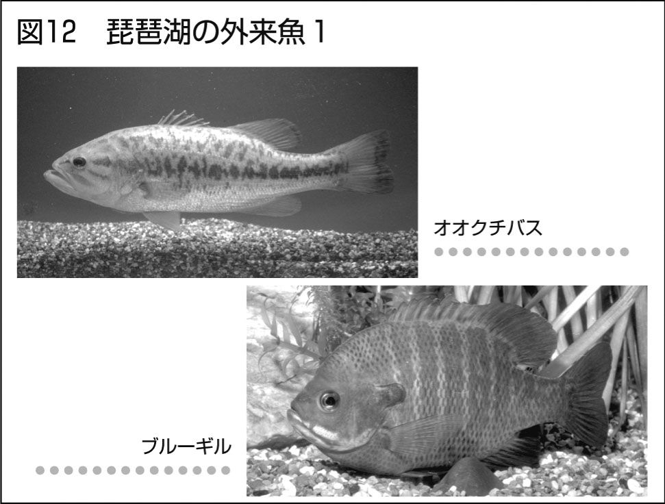
琵琶湖の在来魚種は、四十万年といわれるような時間の揺りカゴのなかではぐくまれてきた生命です。その生命がいま危機に瀕している。その危機感が一番切実なのは、誰でもない、わたしら漁師です。だから、琵琶湖の外来魚問題に、ぼくら琵琶湖の漁師は一歩もあとに引くつもりはないんです。
わたしらとしては、六〇％や七〇％や、いや九〇％やといった論争をしたいわけやありません。少なくとも、琵琶湖には大変な問題が起きていることは共通の認識として持ちたい。その共通の認識から、「では明日の琵琶湖をどうするのか、琵琶湖の漁業と漁業者の生活をどうするのか」という未来に向かっての議論をしたい。それがわたしら若い琵琶湖漁師の本音ですねん。
琵琶湖の漁業者、とくにわたしら滋賀県漁連青年会では、「一匹でも十匹でも駆除」という考えでいます。その試みの一つが、滋賀県漁連青年会が主催した二〇〇一年八月十二日の「バス・ギル駆除釣り大会」です。
わたしら魚の顔はよう知ってますけど、どうやったら駆除大会に人が集まってくれるのかは知りません。「何とか百人はきてほしいなぁ、どうしたらきてくれるやろ」とか考えて、とにかくビラをつくりました。けど、そこが素人の悲しさで、百人にきてもらうのにどれくらいのビラをまけばいいのかも分からん。
「百人やったら、三百枚もあったらいいんとちゃうか」
こんな感じで三百枚ほどのビラを用意して、まきました。期待していた百人には及びませんでしたが、それでも駆除大会の趣旨に賛同して茶髪のカップルあり、子供連れの家族ありで六十人くらいの参加者がありました。あとで、その方面に明るい人と話をしたら、あきれられました。
「もうちょっときてくれるかと思ってたんやけど......」
「どれくらいのビラ、刷らはったん」
「三百枚ほどやけど......」
その人は、三百枚という数字にちょっと驚いたあと、「二千枚、三千枚のビラをまいて百人やで。三百枚で六十人きてくれたら御の字やで」といわれました。
バスやギルの漁獲量は六十人で八十キロほど。それも守山漁港界隈と周辺のわずか百～二百メートルの範囲で、時間もわずか数時間のもんですねん。
そのあと、「エリにどんな魚が入っているか、漁船で見てもらえます」という企画にはほとんどの方がエリの見学に参加されました。
「ええ！ 何これっ！」
エリツボの網を揚げると、一斉に上がったのがこの声です。予想通り、数で八〇％以上、目方にしたら九〇％以上がバスとギルで、残りが孵化して三カ月ほどのハスの稚魚、通称ハスゴでしたね。誰もの口から出たその声を聞いたとき、わたしら漁師がバスやギルを目の敵にする気持ちをかなり理解してもらえたんやないかと思いました。
ハスという魚は、わたしが子供の頃、野洲川に投網を打ってつかんだ魚です。田楽や塩焼きにすると淡泊な味が生きて美味い魚ですけど、小骨の多いのが玉に瑕で、子供の頃はよく小骨に往生したもんです。
この駆除大会は初めての試みやったんですけど、一回目としては成功やったと思いますし、琵琶湖の現状を知ってもらうにはいいイベントになります。広報のやり方も勉強して、もっとたくさんの人に参加してもらえるようにしていくつもりでいるんです。
ちょっと昔のことを思い出すと、初めてギルの顔を見たのは、十八年ほど前のことになるかな。オフクロを船から下ろして、一人で漁をはじめた頃ですね。
ある日、コイトの網を揚げたら、それまで見たことのない体形の魚がついとった。
琵琶湖におる魚はみな顔見知りやけど、そんな体形の魚を見るのは初めてでしたね。たった一匹だけでしたけど、オヤジに連れられて漁に出たときも、一人で漁に出るようになってからも、一度も見かけん魚でした。それがブルーギルやったんです。
けど、そのときはまだブルーギルという外来魚が琵琶湖にいるとは知らんし、外来魚問題も騒がれてません。当時もいまも、家庭で飼う観賞魚がコイトにかかったりエリに入ったりすることがあるんで、「何やこの魚、見たことのない魚やなぁ。新種の観賞魚かいな、また誰か逃がしよったんか」と思いながら、網から外そうとしたとき、嚙みつかれたような感じがしたんですわ。
ブルーギルは、食欲は旺盛ですけど口は小さい。で、嚙みつかれるような魚やないですけど、そんなことそのときは知りません。それに、そのしばらく前に、「日本の池にピラニアがいた！」というようなテレビ番組を見た覚えがあったので、「あっ、ピラニアやっ！」と一瞬思いました。
たしか、組合に持って帰ってみんなに見せたと思います。結局、ピラニアと違ってブルーギルやということが分かったんですが、そのあとブラックバスが問題になって、いまはもうわたしら琵琶湖の漁師はバスとギルはほんまに親の敵のようなもんですね。
ブラックバスを最初につかんだのはそれから三、四年はあとかな、いまから十四～十五年ほど前になりますね。当時はバスの名前もあまり知られてませんでしたし、生態的にここまで問題になるとは誰も予想せえへんかった。
最初は「これがブラックバスいうやつか」ではじまり、「最近はバスが増えとんな」になり、「またバスばっかや。アユはフナはどないなっとんや」になったわけです。
徐々に有用魚種の水揚げが減り、代わって網にかかる外来魚が増えてきて、あるとき爆発的に増加した。たった十四～十五年の間に、この有様ですやん。ギルは十億匹単位、バスも億匹単位に増えて琵琶湖をわがもの顔に泳いでますねん。いま南湖の水中が覗けたら、もうバスとギルだけですよ、ほんまに情けない。
そのとき、漁師も「珍しい魚や」くらいにしか思わなかったし、行政も動かんかった。漁師も行政も動いていれば、ここまで問題は大きくならなかったかもしれません。いま思えば、そのときの手遅れが悔やまれて仕方ありません。こういうのを「後悔先に立たず」とか「後の祭り」いうんやね。けど、その遅れを何とか取りもどしたい。わたしらはこれからも頑張らなあかんと思ってます。
琵琶湖の魚も、わたしら琵琶湖の漁師も、日本の自然と一緒に生きてきた仲間なんです。
その仲を引き裂こうとするのがバスやギルで、その被害の矢面に立たされているのが、漁師ですねん。いままで琵琶湖の魚と仲良く共存共栄してきたわたしら漁師、ラムサール条約でも「賢明な利用の仕方」と謳われた伝統的な漁業を細々と営んできた琵琶湖の漁師が、バスやギルの食害で窮地に追い込まれてるわけです。
何度もいうようですけど、わたしらは、琵琶湖にはもう億匹単位のバスと十億匹単位のギルがいると想像してます。これだけのバスとギルが琵琶湖の南湖と北湖を泳ぎまくり、アユ、モロコ、フナ、エビなんかを追い回して食べてるかと思うと、ほんまに鳥肌が立ちます。
けど、手をこまぬいて見ているわけにはいきません。まだはじめたばかりやけど「バス・ギル駆除釣り大会」を開催したり、一匹でも十匹でも、百匹でも駆除していくために、漁閑期に当たる九月には駆除目的の漁をやっています。
駆除には、コイトやエリを使ってます。バスやギルの駆除のためにコイト網を張ったり、エリツボの網を揚げるときなんか、怒りを通り越して涙が出ますよ。
九月はコアユが卵を持つ時期ですから、本当は禁漁期です。駆除目的の漁とはいえ、卵を抱いたコアユをつかむのは違法です。で、コアユを混獲しないような大きさの目合いを使うという条件で、二〇〇〇年から外来魚駆除が認められたんです。
コアユは成魚でも全長十センチほどの小さなアユやということは前に話ましたけど、このアユを混獲しない網というのはそこそこの大きさの目合いになります。これだとバスやギルの幼魚も通り抜けてしまうんですが、いままでにない取組みとしての意義はあると思います。
コイトにしてもエリにしても、琵琶湖漁に特徴的な待ちぼうけの漁です。外来魚駆除に適した漁法といえるかどうかは少々問題はあります。
「いったん琵琶湖に蔓延したバスやギルは駆除できん」という人もいます。「だから、認めてしまえや」という人や団体もいます。そうした人たちや団体に、わたしらは「一匹でも駆除や」といって行動していきたいんです。
こんな漁は漁師の漁とはとうてい思えんし、最悪の漁でもあるんですが、漁場を守るため、生活を守るためにはやらざるをえません。たとえたら、お百姓さんが収穫を得るために、畑や田んぼの雑草取りをしますけど、それと同じかもしれません。いまは仕事と思えんようなことでも、いつかいい結果に結びつく。そう信じて駆除の漁をやってますし、これからも継続していくつもりですねん。
ブラックバスやブルーギルの駆除をやってますけど、県外の知り合いとか、漁師仲間の子供とかには、「漁師は、バスやギルがほんまに憎うて駆除してるんと違うねんで」といいます。
考えてもみてください。ブラックバスがパスポートを取って一匹で飛行機に乗って琵琶湖にきたわけはないし、ブルーギルが切符を買って貨物船に乗ってくるわけもない。それに食害にしても、バスやギルは、生き延びるためにアユを食べ、エビを食べるわけです。種の存続のために卵を産み、他の魚に食べられんように護衛したりもしてる。
問題は、もともと琵琶湖にいなかった外来魚がなぜ琵琶湖で泳ぎはじめたかなんです。そこには、人間がいますわね。誰かがバスやギルを持ってきて、琵琶湖に放したんでしょ。
バスにしたら、いままでの水の味とはちょっと違うけど、右を見ても左を見ても、美味しそうなアユやモロコ、エビが泳いでるわけです。
「ええところにきた。琵琶湖はええ、ほんま天国や」
こう思ったかもしれません。いや、多分、そうでしょう。
軟らかい子持ちのアユやモロコ、人間も食いたいエビを食って気持ちよく泳いでたら、いい匂いがしてくる。パクッと食べたら、疑似針やった。バタバタ暴れて精根尽き果てたところで釣り上げられて、「もうアカン」と思ったら、針から外されて逃がしてくれた。バスにしたら、「どうしたんやろ、死ぬ思たけど命拾いしたで」てなもんやね。
逃がされて、またエビやモロコを追いかける。「この前の子持ちのモロコは美味かった。また子持ちのモロコ食うたろ」とか思いながら泳いでたら、またいい匂いがしてきた。バスに学習能力があるかどうか知りませんけど、「大丈夫かな。まぁ、ええか」と食ったらまた疑似針やった。「イタタタ、今度こそアカンか」と思いながらも必死に抵抗して、釣り上げられたけどまた逃がしてもらった。
「いったい、人間というやつは何を考えとんねん」と泳いでたら、今度は何かが身体にからまって身動き取れへん。「これが人間の使う網というやつか」と、からまったまま揚げられていったら、漁師の怖い目があった。バタバタしとったら、つかまれて網から外してもらえた。「今度も逃がしてもらえるのか」とちょっと安心したら、ゴム長で踏みつけられて、網にかかった仲間と一緒に高熱の炉に入れられて魚粉肥料になってしまった。
こう考えると、バスもかわいそうな魚ですやん。はるばる異国に連れてこられて、バサーとかいう人間にもてあそばれて、最後は漁師に憎まれながら魚粉肥料になる。そんなかわいそうな人生（魚生）にしたのは誰やということです。結局、環境問題にかぎらず、ものごとの根本にいるのはいつも人間やということです。
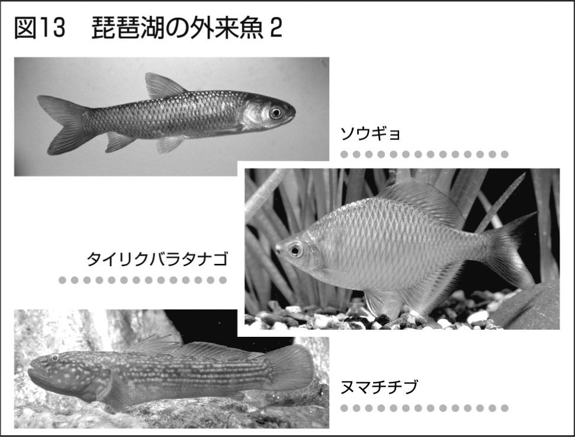
それ以外にも、北湖ではキャビアが獲れるチョウザメが網にかかったという話も聞きましたし、クルメサヨリ、レッドテールキャット、サッカーキャット類、ピクタス、スポッテッドナイフフィッシュ、ナイルテラピア、ジルテラピア、グリーンテラー、アストロノータス、スポッテッドガー、ショートノーズガー、アリゲーターガー、ニードルガー、ロングノーズガー、オキシドラス、ブラックテトラ、コロソマ類といった何が何やら分からんような魚、舌を嚙みそうな名前の魚もつかまってますねん。
あと、カメもいますね。ミシシッピーアカミミガメとかマタマタ、ミドリガメ、カミツキガメいう怖い名前のカメも網にかかりよるんです。わたしなんか、甲羅が三十センチもある大きいミドリガメを半年で三匹もかけましたよ。ミドリガメは嚙みつきますから、下手すると痛い思いをすることにもなるんです。
いろんな外来魚にしてもカメにしても、バスやギルと同じで、パスポートを取って自分で飛行機に乗ってきたわけでなければ、貨物船できたわけでもない。こういった外来種は、結局、観賞用とか子供にせがまれた親が夜店で買って、家の水槽なんかで飼っていたやつを琵琶湖に捨てるんです。観賞用で飼っていたら大きくなりすぎて飼い切れなくなったとか、弱って処置に困って琵琶湖に捨てたとしか考えられませんわね。
夜店で買ったけど、「弱ってきてかわいそうや」いうんで琵琶湖に放して、「元気になってね」いうのんはかわいいように見えますけど、わたしら漁師にしたら「何すんのん」といいたくなりますやん。放されて、いや捨てられてやね、捨てられた魚やカメがどういう行動を取るかまで考えてませんわね。
元気になった魚やカメがどうするかいうたら、アユ、モロコを食べたり、アユやモロコ、フナの卵を食べたりして何十万年もつづいてきた琵琶湖の生態系をメチャクチャに破壊するわけです。
生き物が弱るのはかわいそうという気持ちは理解できますけど、だからといって琵琶湖に捨ててもいいことにはならんでしょう。まして、害を及ぼすことが分かっているような外来魚を密放流する人間は、琵琶湖の漁師として絶対に許せません。
琵琶湖で起きている問題と同じ問題がいま、日本各地の河川・湖沼で起きています。いまが、「自然を守るってどういうこと」とか「自然と共生する人間の生活って何」とか、真剣に考えんといかん時期やとわたしらは思ってますねん。
「外来魚問題は、人間の自然観の問題や」とわたしらがいって賛成を得られても、それで琵琶湖の魚が増えることにはなりません。琵琶湖の有用魚種を増やそうと、ニゴロブナやコアユ、ホンモロコをはじめとして、コイ、ウナギ、ビワマス、セタシジミなんかの放流が、滋賀県水産振興協会や滋賀県漁業協同組合連合会の手でおこなわれています。
たとえば、アユは、もう一週間もすれば産卵しそうな親アユの放流が人工河川や天然河川でおこなわれています。放流量は、平成三年は約二十二トン、五年は約二十四トン、十年は約十九トン、十一年は約十八トン、十二年は二十一トンです。
ニゴロブナの稚魚や幼魚の放流は、平成三年は約六千万尾、五年は二千八百二十六万尾、十年は約八百二十九万尾、十一年は約五百四十万尾、十二年は六百三十万尾。
ホンモロコは平成三年は約三百五十二万尾、五年は四百三十七万尾、十年が約八百三十三万尾、十一年は約六百六十一万尾、十二年は九十七万尾になっています。
（ニゴロブナの放流量が年々減少しているのは、食害に合わないサイズにまで育てておこなわれるようになったため。尾数で見るとこうなっている。養魚池の容量に限界がある。ホンモロコの十一年、十二年の減少も同じ理由）
これだけの稚魚・幼魚を放流しても、ニゴロブナとホンモロコの漁獲は減り、コアユの漁獲も伸びてません。その結果は、ほんま、わたしらにしたら「助けてください」といわんならん状況になってます。
『滋賀農林水産年報』という統計があります。これにはいろいろな琵琶湖の魚種別漁獲量が年次ごとに載っていますが、わたしが生まれた前年の昭和三十五年、漁をはじめた昭和五十五年、ニゴロブナの統計が取られはじめた昭和六十二年、それと平成五年と十年のデータを比較すると驚きます。単位はすべてトンです。
昭和35年
合 計 ７４８２
コアユ ３１３
ニゴロブナ ―
その他フナ ７００
ホンモロコ １８１
その他モロコ １０４
昭和55年
合 計 ５１８９
コアユ ７９３
ニゴロブナ ―
その他フナ ７９１
ホンモロコ １９６
その他モロコ ３７
昭和62年
合 計 ４６５４
コアユ １０７３
ニゴロブナ １０９
その他フナ ３９２
ホンモロコ ２９９
その他モロコ ３８
平成５年
合 計 ３６１６
コアユ ８３５
ニゴロブナ ５０
その他フナ ７７
ホンモロコ ２３１
その他モロコ １２８
平成10年
合 計 ２３９４
コアユ ７０４
ニゴロブナ ２８
その他フナ ６４
ホンモロコ ２９
その他モロコ ４５
なんと、漁師になってから合計トン数で約五四％の減少、ホンモロコは約八五％の減少、ニゴロブナは統計が取られてから何と七四％以上の減少になってます。わたしが「助けてくださいといわんならんような状況ですねん」と悲鳴を上げる理由が少しは分かってもらえたかと思います。
この表を見て、「コアユが増えてるやないか」というかもしれませんが、その理由ははっきりしています。放流の苦労が実り、放流された親アユから生まれたアユの稚魚が琵琶湖に帰ってきて成長し、わたしら漁師の漁獲に反映されているわけです。
ところが、ニゴロブナやホンモロコの場合は、これだけの数を放流しても漁獲は増えるどころか、激減しています。なぜかというと、ニゴロブナやホンモロコは琵琶湖の固有種ですから、琵琶湖をすみかにして生きるのが最適の魚です。いまの川はコンクリートの岸、コンクリートの川底になって、川辺にもヨシがない。フナやモロコは、ヨシなんかに卵を生み、ヨシの陰で成長する魚ですから、産卵場所も成長する場所もないわけです。
だから、ニゴロブナやホンモロコは琵琶湖に放流するしかないんですが、その稚魚・幼魚がバスやギルに食われてしまう。これだけの量を放流してやっと漁獲の数字が２ケタなんですから、放流せんかったらどういう数字になっていることか。考えるのもイヤな話です。
琵琶湖の魚がどれだけバスで追いつめられているか、毎日のように琵琶湖の魚を見ているわたしら漁師ほど肌で感じられる人間はおりません。追いつめられているのはわたしら漁師も同じで、漁師は弁も立たんし、頭のほうも回りませんが、漁師の皮膚感覚と実感でマスコミの人とバスの食害をよく話させてもらっています。
バスの害が知られるにつれて、わたしらに好意的なマスコミ関係者も増えてきています。行政からも、「各市町村で駆除釣り大会を開いてください」とか、「各組合に釣り客が持ち込んだバスやギルは処理してください」というお願いが出たり、釣り関係者に「釣り大会を開催されるなら、釣り上げた外来魚はリリースされないように」という要望も出されています。全部お願いで強制力はありませんけど、行政も本腰を入れて外来魚対策に取り組みはじめてくれたわけです。
それはそれで頼もしいし、ありがたく感謝もしていますけど、バサーと呼ばれるような「バス釣り大好き人間」、それにバスで飯を食っている団体やバスプロとは正面から意見がぶつかります。元からして逆の意見やから、当たり前といえば当たり前ですけどね。
そうした人間のなかに、よくこんなことをいう人がいます。
「バスやギルで在来魚が減ったとして、琵琶湖で漁業者として生活したいんなら、バス釣りの入漁料で生活する方法もあるやろ」
「在来魚の漁があかんようになったら、バスを琵琶湖の水産資源にしろ」といっているわけです。けど、わたしらはそんなこと死んでも絶対にしませんし、琵琶湖の漁師にそんなことをいうのは失礼ですよ。
考えてみてください。わたしのうちには琵琶湖漁師で生きたおじいちゃん、生き別れしたけど漁師やったオヤジもいます。他の漁師仲間にも、先祖代々の漁業者がいます。
そうした漁師が琵琶湖で生活させてもらい、恵みを分かちあってきた。琵琶湖沿岸と滋賀県、それに日本食文化を支えてきた自負もあります。バスやギルは、琵琶湖の自然の恵み、四十万年かそれ以上の時間をかけてはぐくまれてきた恵みを食い荒らして、窮地に追い込んでいます。そのせいで、わたしら漁師は、みなさんに琵琶湖の恵みを提供していくことがむずかしい状況になってきているんです。
そんな漁師に向かって、「バスやギルで飯を食え」いうのは失礼やし、わたしら漁師を支えてきてくれた魚にも失礼や。バスやギルで飯食ったら、それは琵琶湖の漁師魂をなくしたときです。琵琶湖の漁師の魂をなくしたら、その人間はもう琵琶湖の漁師やありません。琵琶湖はいまマザーレイクとかいわれてますけど、そんなことしたら「母なる湖」にドツかれますよ。
バス・ギル対策の一環で、いま「キャッチ＆イート」というキャンペーンが行政中心に張られています。「バス釣りの自由を認めてぇや」という人たちの「キャッチ＆リリース」のパロディですわね。「美味しい魚です。バスやギルを釣ったら、家庭に持ち帰って食べてください」というのが趣旨で、最近では食べ方の研究までされています。
「琵琶湖の水産資源を守ろう」というところでは行政と漁師は合致していますけど、じつは考え方には微妙な温度差があるんですね。行政は「釣ったら食べてください」とお願いしてるんですけど、わたしら漁師はバスやギルを駆除してるんです。だから、本当のところ、「バスやギルは食べてもらわんでもいい」と思っているんです。
琵琶湖には、伝統的文化になったナレ寿司や佃煮のような美味いもんがあるやないですか。外来魚のためにその材料を安価に提供できなくなってしまったのに、「バスやギルには美味しい調理法があるから食べてください」という考え方にはどうしてもなれんのです。
わたしら漁師は、このキャンペーンには、「バスやギルを琵琶湖の水産資源にしたらいい」という考えにつながりかねん面があるんやないか、と怖くも思ってるんです。
もしもですよ、食べて美味しい料理法が開発されてバスやギルが流通ルートに乗ったとすると、それはバスやギルを琵琶湖の水産資源として認めることになります。わたしはそんなことを絶対に認めませんけど、漁師も消費者もバスやギルを資源と思いだして琵琶湖のフタを開けてみたら、コアユもフナもホンモロコもおらん。泳いでるのはバスとギルだけ。
そうなると、ニゴロブナのナレ寿司も、美味しいコアユやホンモロコの佃煮も消えます。それでは琵琶湖の漁師とはいえませんし、琵琶湖としても最悪の状況ですわね。
わたしなんかバスもギルも美味い魚とは思いませんけど、画期的な調理方法が研究されて美味しく食べられるようになったとしても、現実にバス釣りをしている人は持って帰って食べませんでしょう。
カップルでも親子連れでも、琵琶湖にバスを釣りにくる人を見かけますが、バスの鮮度を保持するクーラーや氷を持ってくる人はいません。「キャッチ＆リリース」でいい、それがバス釣りというもんやと信じてるからです。「キャッチ＆リリース」とかいってる人は、釣っている瞬間が楽しいだけです。同じ魚が釣れてもかまわん、魚と引き合いしてる感触が楽しいというような人に、「美味しい魚です。釣ったら持って帰って食べてください」いうても、持って帰ってくれるはずがありません。
仮に、「そうか、持って帰ろうか」という人が出てきても、家で料理するとなると、マナ板と包丁が血で汚れます。ウロコ取りという面倒な作業もある。海釣りを趣味にしている人の奥さんで、釣ってきた魚を家庭で料理している人がどれだけいてはりますか。海の魚も、切り身で食べるほうがいい。自分でハラワタを出したり、死んだ魚の目を見るのが怖い女性が増えている時代ですやん。
料理する手間を考えたら、リリースは楽ですわ。だから、「キャッチ＆イート」キャンペーンは、なかなか成功がむずかしいとわたしらは思ってますねんや。
いい言葉がありませんけど、わたしとしては、「キャッチ＆テイクイン」といったようなことのほうが有効やないかと思います。琵琶湖という狭くて広い湖に、五十近い小さな組合があります。バスやギルを釣ったら、近くの組合に持ち込んでもらう。持ち込んでくれたら、何がしかの記念品を出すような対応策のほうが有効やないかと考えてるんです。マザーレイク「母なる湖」への親孝行でしょ。
いまもいいましたように、わたしら琵琶湖の漁師はバスやギルを水産資源としては絶対に認めません。
けど、バス釣り大会を主催するような釣具会社や団体には貴重な水産資源ですやろね。釣り道具が売れるし、大会を開けば参加料が入る。それに、「キャッチ＆リリース」というお題目があって、いくら釣られても資源は減らんから資源を補充する資金は必要ない。一石二鳥どころか、一石三鳥かもしれませんわね。
釣具会社がバスを密放流したとはいいませんが、バスは誰かに密放流されたとわたしらは考えています。バスもギルも、パスポートを取って、自分の意思で琵琶湖に泳ぎにきたわけやないです。ギルが琵琶湖にすみついた理由はいろいろいわれてますけど、バスは大量に密放流されたと確信してます。わたしらは、いまでもバスが違法に放流されていると考えてます。闇夜もありますし、わたしらの目がいき届かん地域もありますからね。
琵琶湖でも、大きなバス釣り大会がすでに何回か開催されています。バサーやバス釣り団体に考えてほしいのは、ここなんです。「あんたらが相手にしてるバスは、誰かが琵琶湖に密放流したんやで。違法に琵琶湖に放された魚やで」いうことです。違法に放流されたバスを相手に、スポーツフィッシングもないでしょう。「だから、琵琶湖でバスを釣るのはやめてください」と、わたしらはいってますねん。
もう一つ、わたしらが問題やないかと思ってるのは、大会でおこなわれている「キャッチ＆リリース」です。これは日頃とは違う形の「キャッチ＆リリース」で、わたしらは、大会での「キャッチ＆リリース」は法律的に問題のある行為やないか、と考えてるんです。
大会で釣り上げた魚は、すぐには再放流しません。重さや大きさを計測して順位をつけて、景品やら賞金をもらいます。ということは、「あなたの釣ったバスはこれこれの結果でした」と所有を認められてから、まだ息のあるうちに再放流するわけです。
日本でも、釣った水域と同じ水域で魚を放流するのは再放流と認められて、違法移植、密放流にならず、法律には抵触しないそうです。けど、いったん個人の所有物として認められた魚、しかもこれだけ社会的問題になっている魚を生きている間に放流してもいいんですか、とわたしらはいいたいんです。再放流しなければ、少なくともそのバス、そのギルが琵琶湖の貴重な資源を食うことはありません。再放流すれば、やつらも生きるためにコアユを食い、ホンモロコを追いかけ、エビを腹に詰め込む。
こうした考え方で、わたしたちは「いったん所有物になったものを放流するのは違法移植としてください」と、行政にもお願いしています。けど、法律的にどうなるのかわたしらには分かりません。本当に滋賀県の行政に琵琶湖を守ろう、琵琶湖の魚を守ろうという気持ちがあったら、一日も早く実行してほしいことなんです。
日本には、バス釣りが認められた場所が山梨県や静岡県に四カ所あります。どうしてもバスが釣りたかったら、公に認められた場所で釣ってほしい。それにスポーツフィッシングとかいうんなら、アメリカでもカナダでもよろしいやんか、琵琶湖と比較にならんほどの広大な湖沼で思う存分楽しまれたらいいやないですか。なぜ、「キャッチ＆リリース」で着飾ったうえ、スポーツフィッシングという言葉で口紅まで塗って厚化粧するのかと言いたいです。
年に数回、ブラックバスについていろんな立場の人と話をする機会があります。そうした議論の場には「バスを考えるシンポジウム」という名前がついていますが、いろいろな立場というものの、まぁ、話題が話題で参加者もかぎられていますし、どうしても「バス駆除派」と「バス擁護派」に分かれた議論の場になります。
これまでのシンポジウムを振り返ると、擁護派の人間は責任のすり替え論なんですわ。他の湖沼でも同じなんやけど、「在来魚の減少はブラックバスやブルーギルの問題やない。湖岸開発による水質の悪化や漁師の乱獲に問題がある。あんたらバスやギルにばかり問題があるというけど、それはおかしい」という主張やね。
でも、わたしらは、「バスとギルだけが悪いんや。こいつらのせいで琵琶湖の在来魚が滅びようとしている」といっているわけやないんです。
たしかに、生活していくために利便を求めた人間がヨシを減らした。湖岸の開発にともなって、水の浄化作用や在来魚の産卵・孵化に最適だったヨシを減らした事実はあります。けど、「しまった、やりすぎた」という反省が生まれ、その反省を踏まえて、ヨシ復活の動きがはじまっています。
それに、琵琶湖でおこなわれているコイト漁にしても、エリ漁にしても、待ちぼうけの漁です。仕かけに定数制を設けたり、魚探も使用禁止している。乱獲にはほど遠い漁業をやってきているし、稚魚・幼魚の放流もやっている。それだけ努力しているのに、漁獲高は減少傾向に歯止めがかからん。
ここで、琵琶湖に関係する人間全部で現状を分析し、反省するところは反省して歯止めをかけんと、琵琶湖がどうなるか明らかですやん。それなのに、バス擁護派の人間は、現実化したバス問題をいっさい反省せず、「バスやギルは、琵琶湖の漁業問題には無関係や」を繰り返しているだけなんです。
このシンポジウムは、結論が出るような性格のもんやないことは分かっています。ただ歩み寄りを発見する場として設けられている話し合いですから、「進歩ジウム」になってもらわな困りますやん。ただ顔を突き合わせて「バスが悪い」、「いや、バスは悪うない」みたいな水かけ論しても仕方ありません。バスが琵琶湖のニゴロブナやモロコ、それにアユを食べて成長していることは、きんまいバスの腹を割いてはっきりしている事実なんですから、琵琶湖のバスをどうしたらいいのかという議論への発展がないと意味ありませんわね。
今年二〇〇一年のシンポジウムは二月末で、会場は東京の立教大学でした。
わたしらにとって、二月、三月はエリ漁やコイト漁にほんま忙しい時期ですねん。毎日、夜中の零時半には船を出さなあかんような時期で、正直、「こんな時期にかなんな」という気持ちもあったんですが、わたしら漁師の目から見、漁師の肌で感じている琵琶湖の現状を知ってもらえたらと青年会の副会長と一緒に参加させてもらいましてん。
当日も午前零時半には漁に出て、水揚げを朝八時からの漁協のセリに出して、飲み込むように飯を食べて新幹線に飛び乗ったんです。次の日も漁が待ってますから、日帰りの強行軍になります。
ヘトヘトに近い感じで、池袋の立教大学に着いてシンポジウムがはじまったんですが、そのなかに、一人の芸能人がいたんですね。その人は、「外来魚駆除をいっている漁師さんがいるそうですが、バスやギルで食えんようになったら、バスやギルで食えるように考えたらよろしいやんか」と雑誌などで発言している人でした。
当日も、その芸能人は、「ぼくはバス釣りに出会って、寝食を忘れるほど楽しいもんやと感じました。駆除や撲滅やといっている方たちとは、釣りの自由をかけて徹底的に戦います」といわはったんですね。
その人との距離は、わたしから七～八メートルほど離れていたかな。「何いうてまんの！」といいたかったけど、シンポジウムでは混乱を招くような不規則発言は禁止されてますんで、そこはグッと言葉をのみ込んだんですが、感情はのみ込めなかった。
四十分か五十分、感情が高ぶったままやったけど、トイレ休憩に入ったので、その七メートルか八メートルを五十センチくらいにまで縮めたんです。漁師は名刺なんかいらんけど、いま滋賀県漁業協同組合連合青年会の会長をさせてもらっているので名刺があります。その名刺を渡して、こういったんです。
「琵琶湖から寄せてもらいました漁師です。あんたがさっきいわはったことを聞いて、ハラワタが煮えくり返ったままですねん。あんたが釣りの自由をかけて戦うなら、ぼくらは自分たちの生活と命をかけて戦いまっせ！」
鳩が豆鉄砲食らったような顔をしてましたが、後半の開幕と同時に、意見を求められたわけでもないのに、その芸能人はマイクを握ってこうしゃべりはじめたんです。
「トイレ休憩の間に、琵琶湖の漁師さんに詰め寄られてちょっとビビったんですが、ぼくもアウトドアしてるから車にチェーンソー持ってるし、若い取り巻き連中もいてるしね」
一瞬、何をいっているのか分からんかったけど、「チェーンソー持ってるし、若い取り巻き連中もいるから怖くない」というのは普通の人間のいうことと違いますやん。あんまり馬鹿な発言なんで、わたしはヤジ禁止を忘れて口走ってました。
「何、もう一度いうてみい！」
この芸能人は関西出身でわりと親しみを覚えていた芸能人やったんですが、この一件以来、顔を見るのも嫌な人間になりました。
この数カ月、毎日のように耳にする「テロ」という言葉。決して流行語のようにもてあそんではいけないんだけれど、この某芸能人、つい最近の釣り雑誌でこんなことを言ってました。母なる琵琶湖を守ろうとして、また生活の場を守ろうとしてバス・ギルの駆除をしているわたしら漁師を「テロリストだ、テロ行為だ、絶対許せない」と。バスを釣ってバスに心を食われたんだろうか。わたしは腹立たしいのを通り越し、彼が可哀想にさえ思ってきました。
話をもどすと、さっきの話には、まだ続きがありますねん。
当日、わたしと副会長は、ある人の前列の席に座ったんです。その人は釣り関係の団体の役員さんで、一回だけ面識がありました。同じ座るんなら、どんな話をするかどんな反応を見せるか興味がありますから、わたしと副会長は、その団体の役員さんら五～六人の前列に座ったんです。
シンポジウムが閉会して退席しようとしたときに、そのなかの一人がわたしに手を差し伸べてきたんです。わたしの知っている人とは違う人です。名刺の交換も自己紹介もしませんが、会場でのやり取りから、相手はわたしが琵琶湖の漁師ということが分かっています。その方は見るからに温厚そうな人で、こういいながら握手を求めてきたんですわ。
「まあ、仲良くやりましょう。いろいろあるけど仲良くやりましょう」
正直いって、戸惑いましたね。
「仲良くやりましょう」というのはいい言葉やと思うし、温厚そうな紳士然とした年長者から手を差し伸べられたら、こっちは手を出さないわけにはいきません。わたしも手を出しかけましたけど、手を引っ込めました。
「ぼくらは朝、漁を終えてから東京にきました。この集まりが終わったら、琵琶湖に帰って漁業します。琵琶湖のなかの状況、バスやギルが琵琶湖の魚をどういう状況に追い込んでいるかを見んならんのです。いま声をかけてもらって、ぼくらは仲良くできるかもしれません。けど、追いかけるバスとギル、追われるアユ、モロコ、フナ、エビといった平行線の状況を考えると、とても手を握ることはできんのです」
四十代の一漁師が、釣り団体の年配者、それも役員までしているような方から先に手を出されて、手を引っ込めるのは失礼な話でしょう。顔色が変わりました。こっちの言葉でいえば、「なんちゅうガキや」といった感情を抱かれたかもしれませんが、わたしら琵琶湖漁師は、「バスが悪いわけやない。バスを認めてくれ」という釣り関係団体、その団体の人間とは手は握れんのです。
それからしばらくして、「これからバスを考えるシンポジウムには参加しません」というバス擁護派の告知がありました。わたしらは「逃げんで話そうや」という気持ちがあるんですが、バス擁護派の人は一方的に拒否を打ち出して、話し合いの窓口を閉ざしてしまいました。
人間のいいところは、しゃべれることですやん。立場が反していても、話し合うことで歩み寄れる。話し合っていい方向へ持っていこうとしない関係者はナンセンスやし、せっかくの協議の場を放棄してしまう人は無責任やとわたしらは思います。
バスやギルが入った琵琶湖では、在来魚は逃げ惑うばかりで、それこそ波乱万丈の毎日やろうと思います。わたしらも、穏やかな琵琶湖に浮いていればよかった日々が、波乱に富む毎日になってしまいました。
普通のときでも午前二時半か三時半、忙しいときは午前零時に漁に出るとか、ブラックバスやブルーギルが琵琶湖に増えて大変なことになっているとか、漁師は辛い生活やと思われるかもしれませんが、そんなキツイ面ばっかりと違います。琵琶湖はやはり日本一の琵琶湖、日本のマザーレイクです。
「琵琶湖の漁師しとってよかったぁ」
こう思うこともたくさんあります。琵琶湖はまだまだ捨てたもんやないです。
琵琶湖の漁師していてよかったと思うことは、まず琵琶湖の自然、風景。もともとわたしは琵琶湖の景色、琵琶湖そのものが好きで、風も雲も、少なくなったけどヨシ原も大好きです。ヨシがサワサワと揺れる風景を見ると、「あ、風が見えた」と思ったり。
春は、うらうらと心まで溶けてしまいそうななかに、比良の山がぼうっと霞む。比叡山もどことなくのんびり見える。魚の稚魚もたくさん生まれて、琵琶湖全体が春やね。
夏は、湖水が沸き立つほど暑さが厳しい。けど、その暑さのなかに楽しみもある。
アユの沖すくい網漁に出て、あんまり暑いんで短パン一丁になって湖水に飛び込む。湖面に浮いてくる頃にはサーッと暑さが引いてるし、湖面から目に入る琵琶湖の空はどこまでも蒼い。そこに真っ白い雲がポッカリ浮いてる。
『琵琶湖周航歌』に「仏の御手に抱かれて......」いう歌詞がありますが、「琵琶湖の御手に抱かれて......」というか、琵琶湖のありがたさ、よさがしみじみ胸にあふれます。
秋はさわやかな風が湖面を渡って、小さな波が日の光で輝きます。この時期は比較的漁も少ないんで、のんびりと琵琶湖の景色を眺めたりしますね。
冬。あんまり風が冷たいんで、顔が切れて血が流れてるんやないかと思います。指なんか、手袋しててもかじかんで、指先の感触もありません。そんななかで網を仕かけたり、コイト網やエリ網を揚げるのは確かに辛いですけど、逆に「オレは、琵琶湖の漁師しとんのや！」いう充実感も感じます。「男の仕事やぞ」といった感じです。
わたしの友達のなかには、琵琶湖を遠く離れてサラリーマンしてる人間もいます。そういう人間が帰省してきて琵琶湖を見ると、「やっぱり琵琶湖はええな」といいます。わたしはその「ええ琵琶湖」と毎日、つき合ってるんですから、こんな幸福はないでしょう。しかも、その琵琶湖で好きな漁師をしてる。こんな最高の人生はありませんやん。
サラリーマンになって出世するのも、悪いことやない。けど、出世のために仕事をするのは楽しいことやない。仕事するなら自分のためにやりたいし、自分の好きなことをやりたい。それで、人様のお役に立てたらいうことない。
カッコよすぎるかもしれませんけど、わたしはそういう仕事がしたかった。だから、好きな琵琶湖の景色を見ながら漁師をやって、美味しい魚をつかんで、みんなに「美味しいわ」いうて食べてもらう。そんな仕事ができる自分の人生を、「なかなかええ人生やで」とも思ってますねん。
いまのは一年の楽しみやけど、一日は一日でそれなりの楽しみがあります。
コイト網を仕かけるのは日没寸前がベストですから、船を出して網を仕かけているうちに、景色の色がだんだん消えていく。絵の具で描かれた風景画を薄い薄い墨で覆っているうちに、いつの間にか真っ黒になっていた、そんな感じですね。ゆっくりゆっくりそれが進んで、ストンと日が落ちたら、もう岸辺の明かりがチラチラ目に入る。
日の出を迎えるのは船の上です。船の上で日の出を迎えると、昨日、薄い薄い墨で塗られた景色が、朝の光のなかで色を取りもどしていくんです。それがよう分かるんです。
ここら辺りではよく知られている寺で、琵琶湖の近江八幡市に八幡山長命寺というお寺があります。西国第三一番札所とかで由緒あるお寺さんですけど、わたしらがエリ漁をしているとき、その長命寺から昇る朝日はそら絶品です。見事としかいいようがありません。
薄暗い湖の向こうに山があって、湖の上で動いているものといえば、朝早い鳥とわたしら漁師だけです。長命寺のほうから日が昇ると、光明という言葉がありますが、ほんまに光の筋ですね。山と空の境目がちょっとずつ薄明るくなって、稜線がハッキリしてきます。
その次はもう、辺りの薄暗さをサーッと掃き清めるように、光の束が投げられたようになるんです。琵琶湖の色も、薄墨色から墨がどんどん薄れて濃い群青色になって、光が増すにつれて水に透明感が加わってきます。わたしは作家と違いますから、こんな表現、漁師にせえいうのが無理な話ですけど、口でいったらこんなことになりますかね。
エリは仲間仕事で、一緒にエリ漁をする漁師はみな先輩です。エリのツボ網を揚げながら、五十歳も超えてもうすぐ六十歳に手が届く漁師の口から、「見てみい、今日もきれいや。べっぴんさんや」いう言葉が出ます。
長年漁師をしてるんですから、長命寺の日の出がいくらきれいといっても見慣れてるはずですやん。そんな漁師が、いまでも、「きれいや、べっぴんさんや」と感心するんですから、そのきれいさは想像してもらえるでしょう。
百聞は一見にしかずで、一回来られたら分かります。これは船から見るのが最高。仕事をしている時間とはいえ、船から拝む長命寺の朝日はわたしら漁師の楽しみでもあり、特権でもあるでしょうね。
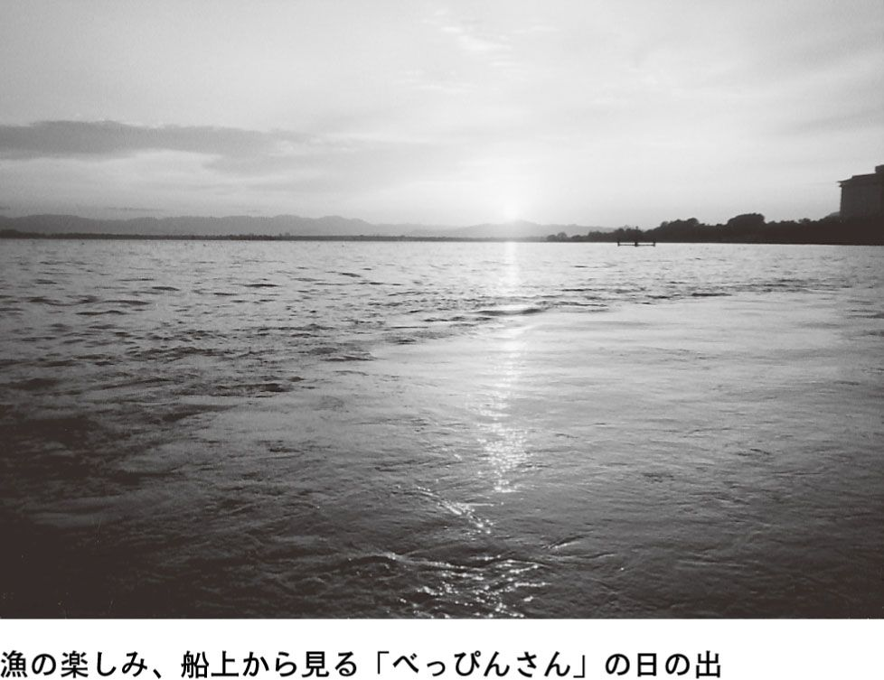
琵琶湖に船を浮かべてると、三百六十度、どの風景を眺めても飽きません。
よく「ここが琵琶湖の観光スポット」というようなことをいう人もいますけど、わたしにいわしたら琵琶湖は全部スポットで、琵琶湖を見てると三百六十五日、心だけは豊かなもんです。もちろん、財布は別にしてですよ。
そのなかで、長命寺の日の出と同じように、わたしがとくに「ええなぁ」と思うのは、海津大崎やね。竹生島の北北西にあたる場所なんですが、ここは桜の名所です。湖岸に沿って道路があって、それが桜並木になっています。花見シーズンにはたくさんのお客さんが車で見えますが、わたしらも漁船で花見としゃれ込むんです。
毎年、桜前線が話題になりはじめると、友達から電話が入りますねん。
「今年の花見、直弘ちゃんはいついくねん」
要は、催促ですわね。
陸の道路はそんなに広い道やないし、駐車スペースもほとんどない。車を停めてゆっくり花見も楽しめません。船でいくと、駐車スペースもうしろの車も気にせんですみます。
それにまぁ、船から見上げる湖岸の桜並木ももちろんきれいですが、辺りの湖面一面が桜の花びらを敷き詰めた桜の絨毯なんですよ。
「こんなとこ、船でいってええんかいな。気が引けるな」
そう思うくらい、湖面一面が隙間のないピンク色なんです。桜の花びらが織った絨毯を、ゆっくりゆっくりかき分けながら微速前進する。船が桜の絨毯を分けると、そこから青い湖水が顔を覗かせる。上のほうからは、桜の花びらがチラホラ風に乗って舞ってくる。天気も上々とくれば、もういうことはありません。
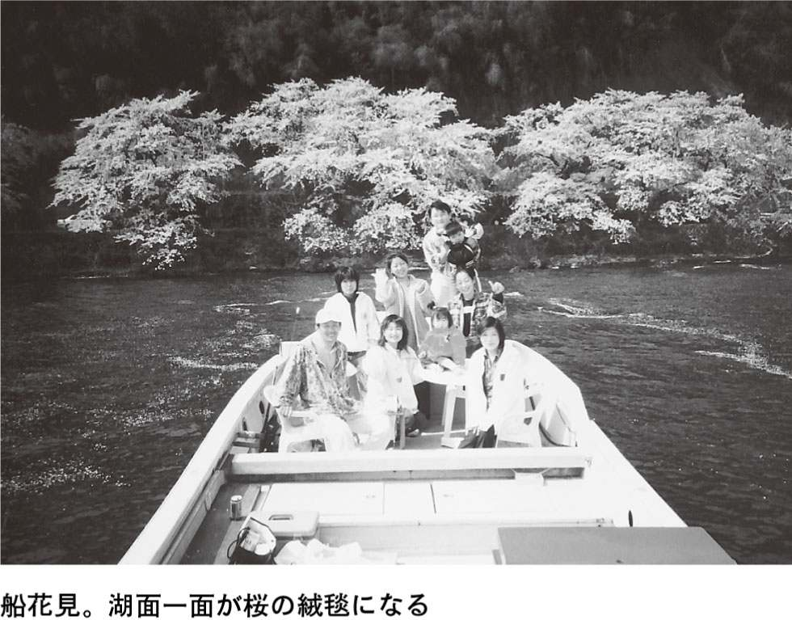
海津大崎の船花見は、言葉にならんくらいきれいです。花見名所は数々ありますけど、船からの海津大崎の花見に勝てる場所はありません。あまりアルコールがいけんわたしは舵取りと弁当ですけど、友達が缶ビールを飲みながら、「すごい、うまい、ええわ、来年もこよう」と独り言をいいたくなる気持ちはよく分かります。
これなんか船を持ってるから味わえる楽しみで、漁師だけの楽しみとはいえません。漁師以外でも、琵琶湖に船を持ってる人もたくさんおられるから、そういう人は知ってはるかもしれんね。ただ、この本でここが船花見のラッシュになったら嫌やねぇ。
「戸田さん、琵琶湖の漁師として一番美味いと思う魚は何ですか」
こう聞かれたら、間違いなくビワマスて答えるね。
十月の声を聞くと、産卵のために、川を溯上します。普段は銀色のビワマスですけど、産卵を控えるようになると、オス・メスともに暗色とモミジ色の雲状紋が体にあらわれて、とてもきれいな魚です。
とくに降雨後の増水したときに大挙して揚がるために、ここらでは、この時期のビワマスを「アメノウオ」と呼んで、炊き込みご飯にします。米にゴボウや干しシイタケ、油揚げ、ニンジンなんかを刻んで入れ、米の上に内臓を取ったアメノウオを置いて一緒に炊きます。薄口と濃口しょうゆ、酒で味つけして、炊き上がったところで身をほぐして、ご飯と混ぜてホカホカのところを食いますねん。
炊き込みご飯も美味いもんですが、本当に魚が美味しいのは腹に子を持つまでやろうね。子を持つと、どうしても栄養がそっちにいって、身の旨味が落ちるんやわ。子を持つ前は身の色もサーモンより鮮やかなオレンジ色ですけど、卵を抱くようになると色褪せします。偉いもんで、親魚は、自分の命を削って新しい命を伝えていくんですね。炊き込みご飯にするのは、身の旨味が落ちるから炊き込みご飯にするわけなんです。
それで、ビワマスの食い方で、わたしが「これや！」というのは七月、八月の造り（刺身）ですわ。魚本来の旨味が魚肉全体にいき渡って、これは美味いでぇ。
この時期のビワマスは炊き込みご飯にはもったいない。もう刺身か握り、舌にトロッとくる味が最高ですねん。目の前に、マグロの大トロとビワマスの刺身を並べて、「好きなほうを食べていい」といわれたら、迷わずにビワマスに箸を伸ばすね。琵琶湖の漁師だからそういうんやなくて、いろいろな魚を食ってきたこの舌がさせるんです。
残念やけど、この美味いビワマスは一般の人の口になかなか入らんのです。需要はあるんですが、漁も不安定で、需要に応えるだけの漁獲がないんです。「すんません、明日までに、ビワマスを三キロお願いします」と漁師にいっても、まあ無理やろうね。
毎年、わたしら青年会は、滋賀県立大学で栄養士を目ざしている学生たちの調理実習に参加してるんですね。県立でもあり、琵琶湖のほとりにある大学ですから、料理には琵琶湖の魚介類を全面的に使っていきたい。これまでもセタシジミ、コアユ、ビワマス、ウナギなどを使ってきたけど、今年はそのビワマスが何とか間に合ったような状態。漁師が手に入れようとしてもそんな状態ですから、美味いのは美味いに絶対間違いはないんですが、美味い時期のビワマスは「幻の魚」いうてもええんちゃうかな。
ビワマスの生が一番とすると、二番はホンモロコやね。
とくに、「もうすぐ春やぞ！」というような子持ちのホンモロコがええね。ビワマスは子を持たん時期のほうが美味いけど、モロコは子持ちのほうがええね、食感がいいっていうか最高やね。
一番簡単な料理は、素焼きやね。子持ちのホンモロコを洗って塩を少々振って焼く。それだけですけど、しょうゆをつけて食うたり、ほんま最高。
「焼きモロコの酢漬け」もいけます。同じように、子持ちのホンモロコを洗って少々の塩を振ってから、こんがりと焼きますねん。漬け酢は酢と砂糖とみりんを合わせ、そこに千切りショウガと輪切りにしたトウガラシを入れます。
この漬け酢に、焼いた子持ちモロコをしばらく漬けるんですが、琵琶湖のモロコはウロコも気にならんし、頭の骨も身の骨も軟らかい。それが酢漬けにすることでいっそう軟らこうなって、子供でも頭から食べられます。
ご飯のおかずに文句なしやし、酒の好きな人なら「焼きモロコの酢漬け」があれば酒が進んでしようがないでしょう。ワカサギで同じような料理を食べる人もいてますけど、問題にならんね。わたしなんか、この食い方がホンモロコの究極の食い方やと思うね。「料理は愛情！」じゃないけど、焼いて、漬けて、手間暇かかってるもんな。
モロコは、田楽もよろしいね。
モロコは、五分ほど塩焼きします。この焼き加減にちょっとコツがあって、焼きすぎるとあきません。魚の味を殺さんと生の部分も残さん、それくらいがええとこやろうね。
田楽味噌は、白味噌としょうゆ、みりん、酒を鍋で練り上げてつくります。モロコを数匹ずつ串に刺して、味噌をつけながら味噌の表面に少し焦げ目がつくまで焼きあげる。
いまもいいましたように、骨まで軟らかい魚です。その軽い歯応えと焼けて香ばしい味噌の味、嚙むと魚の旨味がジワッとからまって、もう絶品やね。考えるだけで生ツバもんです。
三番目は、「コイの筒切り」と「フナの造り」が同点かな。
琵琶湖というとアユとフナが有名で、フナといえばフナのナレ寿司と相場が決まってるけど、この二つの料理も美味い湖魚料理なんです。
琵琶湖のコイは洗い、造り、煮つけなんかにしますし、洗いや造りにしたときに出る頭や骨は味噌汁に入れてアラ汁にもします。
「筒切り」というのは輪切りの煮つけで、コイを筒のように切るところからの命名やろうね。「コイのワゲサ」という地域もあるけど、お寺参りのときに首にかける「輪袈裟」と形が似ているところからこんな名前がついたといわれています。
「筒切り」にするコイは、頭を落としますが内臓は取りません。そのまま四～五センチの輪切りにします。このとき、胆のう（苦玉）をつぶすと苦くなるので、要注意ですね。切ったコイをよく洗って、ザルなんかに揚げて水気を切ります。
鍋に砂糖、しょうゆ、酒を入れて煮立て、煮立ったところに輪切りにしたコイを入れて、落としブタで強火で煮ます。煮汁がねっとりしてきたら、火を消してできあがりです。あれば針ショウガなんかも添えます。
コイの洗いもサッパリして美味いけど、もう一つ、「琵琶湖のフナの造りを食うてみなさい」といいたいですね。
「えっ、フナの刺身が食えるの！」
関東の人なんかこういいますけど、琵琶湖のニゴロブナ、ギンブナ、ヘラブナの造りはいけますよ。「フナは泥臭い」という先入観がありますが、獲れる場所によっては臭みも少ないし、皮をはげば臭みはまったくなくなるよ。このフナの造りも、「寒ブナ」といわれる時期のフナが一番美味い。もう少しで卵を持つときのフナは栄養満点、味満点です。一度食べたら、「フナの造りがこんなに美味いとは！」ときっと思われます。
ここまでにあげた「湖魚料理ベスト３」は、一般の家庭でも食べられる湖魚料理です。もちろん、琵琶湖名物のアユの佃煮やアユご飯も湖魚料理の代表やし、ヒウオ（コアユの幼魚）の二杯酢もよそでは食べられん琵琶湖ならではの料理でしょ。
アユの本には、「アユは川で産卵する」と書かれていると思います。琵琶湖にはいろいろな川が注いでいますから、川で産卵・孵化して成長したアユが琵琶湖に入ってくると考えがちなんですけど、琵琶湖のアユは川で産卵・孵化したものばかりと違いますねん。琵琶湖の砂浜の部分で産卵するアユもいるんです。
琵琶湖のアユは十センチくらいにしか成長しませんから、塩焼きにするには小さすぎます。これは餌の関係やそうです。川のアユは石につく苔を食べて大きくなりますが、琵琶湖のアユは苔の代わりに動物性プランクトンを食べますねん。それで川のアユほど大きくならんということがいわれています。
ただし、琵琶湖では小さくても、他の河川に放流されると普通の大きさに成長します。そのために放流用の琵琶湖のアユが生産されて、全国に出荷されています。アユ釣りで有名な日本全国の川で、琵琶湖生まれのアユが元気に泳いでるいうわけです。
琵琶湖では、重要な資源として、アユの産卵期の八月から三カ月は禁漁期間に入ります。常識的に考えれば、子持ちのアユは獲れないんやから、食べられへんはずです。もう時効やと思うんで言うけど、じつは、一回だけ子持ちのアユを食べたことがあるねん。いや、食べさせられたんやね。
ある日、琵琶湖北端の漁師仲間の家に寄ったんです。ちょうど昼間だったんで、一緒に昼を食べていけ、ということになってね。アユの佃煮が出た。アユの禁漁期でしたけど、漁師の家じゃ以前に獲れたアユを冷凍保存しますから、いつアユの佃煮が食膳に出てもおかしくありません。でも、よく見ると、獲っていい時期のアユとはちょっと体形が違う。半分ほど食べると、プックリとふくれた腹のなかに子を持ってるんですわ。
「ウワッ」と思って、その漁師に聞きます。
「これ、どうしたん」
「ああ、この間出たら、ようけおったから、ちょっとだけつかんできたんや」
箸を落としそうになりましたが、すでに半分は食べた後。台所から出てきた奥さんも、「美味しいやろ」と声をかけてくる。そりゃ、美味しいに決まってるがな。
「美味しいんやけど、これはあかんねんで」
奥さんは、事情を知ってか知らずか、「はぁ、そうなん」とかわいいことをいってましたが、もう十年ほど前の話になりますね。ガキの頃から琵琶湖のアユは食べてたけど、子持ちのコアユはそれが最初で最後の経験です。もう時効やろし、許してもらえるやろ。
自分で獲った美味い魚が食えるのはもちろん、琵琶湖の漁師にとっての楽しみ、喜びになります。けど、家庭で湖魚を食べてくれる人たちがいて、湖魚料理に舌鼓を打ってくれる観光の人たちがいて、土産に佃煮などを買ってくれる人たちもいてくれる。そうした人たちが「美味しかった」といって喜んでくれることが、わたしら漁師の一番の喜びです。
なかでも、滋賀県の誇り、琵琶湖の誇りというたら、やっぱりフナのナレ寿司やね。
フナのナレ寿司には子を持ったニゴロブナが最適とされてますけど、子を持つ時期というのは限られてます。その限られた時期に獲れたフナを使って、一年中利用できるように発酵させた保存食がフナのナレ寿司ということになります。淡水魚を使ったナレ寿司は、滋賀県以外にも、福岡県、和歌山県、岐阜県にもあるそうやけど、滋賀県のフナのナレ寿司は全国的に有名ですよね。
フナのナレ寿司のつくり方は、まずフナのウロコを落とし、エラを取り、ノドの骨を取ります。次に、金串で浮き袋と内臓を抜き取る作業をします。これが「ポン抜き」といわれる重要な作業で、卵の袋を傷つけないように注意深く作業せんとなりません。
これが終わったら、フナ全体に塩をまぶし、腹とエラブタのなかにも塩を詰め込みます。塩を詰めたら、「塩切り」に入ります。これはフナを桶にきっちり並べ、フナと塩を交互に何層にも漬け込み、重石を乗せる作業です。塩で漬け込む期間は、三カ月から一年以上とバラエティがあり、頃合を見計らって塩漬けしたフナの塩や汚れを水でよく落とす「塩抜き」をして、一日ほど天日で干します。
ここからがナレ寿司づくりの本番になります。
エラブタのなかにご飯を詰め、ご飯、フナ、ご飯、フナと交互に何層も漬け込んで発酵の準備に入ります。これを「本漬け」とか「飯漬け」といいますね。
本漬けが終わったら落としブタをして、また重石を乗せ、桶に水を張ります。水を張るのは空気に触れないようにするためで、この状態で数カ月以上発酵させるわけです。これだけ手間暇をかけますんで、完成まで最低一年、長いものでは二年とか三年もかけるナレ寿司もあります。
フナのナレ寿司にニゴロブナが最適とされるのには、いくつかの理由があります。
琵琶湖にいるギンブナ、ゲンゴロウブナ、ニゴロブナの三種のフナのうち、ゲンゴロウブナはタイに似たような体形で、ギンブナはもう少し細長い形、ニゴロブナは一番スマートな体形ですけど縦から見ると丸い形をしてますねん。
形が丸いとできあがった形がきれいで、漬けても偏平にならずに見栄えがするし、「ポン抜き」という内臓を取る作業で胆のうが取りやすい。胆のうは、残すと魚が苦くなる。それに、ニゴロブナは骨が細くて漬かりやすい。こんなことが理由で、ニゴロブナがナレ寿司によく使われるようになったと聞いてます。
そんなわたしら漁師に、ものすごう嬉しいことがありましてん。平成十年六月、「湖魚のナレ寿司」、「湖魚の佃煮」、「アメノウオご飯」が、「日野菜漬」や「丁稚羊羮」と一緒に「県の無形民俗文化財」に選ばれたんです。
アメノウオご飯はさっき説明しましたけど、「湖魚の佃煮」にはモロコ、アユ、イサザ、ハス、ハスゴ、コブナ、エビ、シジミ、タニシなんかの魚介類を煮たものと、魚介と大豆を炊き合わせたイサザ豆、エビ豆、アユの昆布巻きなんかも選ばれました。
「湖魚のナレ寿司」には卵を持ったニゴロブナのナレ寿司以外に、コイ、ニゴイ、ハス、オイカワ、ワタカ、ウグイ、モロコといった湖魚のナレ寿司も無形民俗文化財に選ばれています。琵琶湖周辺では、こうしたいろんな魚をナレ寿司にして食べているからですわ。
フナのナレ寿司は専門店でも漬けて売ってますが、琵琶湖周辺では、自分の家で漬ける家庭がたくさんあります。当然、魚を獲るわたしら漁師はみな漬けてます。
ただ、わたしはニゴロブナを獲ってるものの、家でニゴロを漬けるとなると、完璧なニゴロはちょっともったいない。それで、家では二級くらいのニゴロをキープしてます。
ニゴロ以外でいま家で漬けているナレ寿司は、ウグイ、ワタカ、ハス、カマツカ、ニゴイといったところやね。ニゴイは骨が硬くて半年やそこらでは軟らかくなりませんので、三枚におろして使ってます。ゲンゴロウブナも味はニゴロより落ちますけど、同じフナの仲間ですからたまに使います。
「これだけの種類を漬けてぜいたくな」と思われるかもしれんけど、琵琶湖の漁師としては威張れる話と違いますねん。ニゴロが少なくて代用で漬けてるのがほんまのところで、漁師仲間からは「お前、そんなん漬けてんのか」といわれるやろうね。ニゴロがたくさん獲れたら、美味しいニゴロだけを漬けたいのが本心なんですわ。
ついでにいうと、ナレ寿司は、熟成の度合いで「本ナレ」と「生ナレ」に分けられます。
フナ、コイ、ニゴイ、ワタカなんかは熟成期間が数カ月以上もある「本ナレ」にして、オイカワ、ハスなんかは熟成期間が一～二週間の「生ナレ」にします。「本ナレ」をフナ寿司、「生ナレ」をナレ寿司と呼び分ける地域もあるようですけど、県では両方を「ナレ寿司」として無形民俗文化財にしてます。
よその家の台所を覗く趣味はありませんけど、話を聞くと、塩の量、飯の炊き方、ウロコや内臓の取り方、飯を漬けるときの方法、重石に使う石の重さなんか、どこの家でもほとんど同じような方法になってます。米も、何でか知らんけど、「日本晴」という品種がいいとされています。軟らかすぎる米は駄目で、有名なコシヒカリは使われてません。
どこの家でも同じような方法で漬け込むんやけど、同じような方法を取りながら、家庭ごとに「家の味」というもんが出てきます。「オフクロの味」に似たもんですわね。
漬けた時期によっても、少しずつ味が違ってきます。専門にフナのナレ寿司をつくっているところでも、樽ごとに味が違います。これは、「塩切り」して漬けたあとすぐに雨が降ったとか、しばらく雨がなかったとか、そんな些細な天候の違いが味の差になってはね返ってきよるんですね。ほんまに微妙なことが、味の違いになる。美味いナレ寿司を食べようとしたら、それはそれは気苦労が要りますねん。
それで、ナレ寿司を漬ける家では、「○○んとこのは塩がキツい。△△んとこのは塩切りが甘い。うちのナレ寿司が一番や」と誰でも思ってますねん。その自信があるから、お客さんを相手にするときなんかは、「うちの美味しいフナ寿司食うてや」と自信満々で出すわけです。
わたしらこの近辺の者は、「フナ寿司はもてなしのバロメーターや」と思ってるんです。法事ごとや祝いごとがあると、家庭に招かれますね。そこにフナ寿司があるかないかで、お客をもてなす心が読み取れると思いますねん。ある漁師はこんなことをいってました。「ナレ寿司に手を出すか出さんかは別として、そこにフナのナレ寿司が出ているかどうかでもてなす側の気持ちが分かる」。
豪華な肉料理はある、タイの塩焼きもある。アユの佃煮もある、サラダもある、デザートに高いメロンも用意されてる。盛り沢山やけど、ナレ寿司がない。となると、「この家は本当に客を迎える気があるんか」と思いたくなるいうわけですね。
それで、現に何がなくなるかいうと、肉でもなければ、野菜でもない。メロンでもないんです。見事なまでに、フナ寿司がなくなりますねん。「フナのナレ寿司は近江の食文化」と簡単に片づけられるけども、それだけ長く受け継がれ、愛されてきたんです。ただの食文化というより、もう「心の文化」と呼んでいいんやないかとわたしは思ってます。
ここまで琵琶湖漁の内容、漁師の生活、漁師で嬉しいこと楽しいこと、それに琵琶湖漁業に深刻な影を落としている外来魚の話もさせてもらいました。
いま琵琶湖には外来魚問題だけやなく、水質の問題もあります。
漁師の間で、よく昔の琵琶湖の水がどれだけきれいやったかという話になりますが、わたしらは琵琶湖の水でカップラーメン食べたり、コーヒー飲んだりしたんです。これはウソ違います、ほんまの話です。それも五十年も六十年も昔の話と違います。わたしが漁師になってからやから、たかだかこの二十年以内の話なんです。
どこの家庭にも、鍋物などに使うカセットコンロがありますね。あれを船に積み込むんです。午前中の漁を終えると弁当にしますが、そのときに汁気がほしいし、腹の足しになるようなものならもっといい。で、カップラーメンを船に置いとくんです。
そこで、カップラーメンに使う水ですが、現場調達です。琵琶湖の水をヤカンですくい取って、あとはカセットコンロで沸騰させて三分間待つ。これでＯＫなんです。
弁当を食べたあとはお茶ですよね。日本茶でもいいけど、わたしら若い漁師はやはりコーヒーが飲みたくなる。そんなときも琵琶湖の水をヤカンにすくって、そのままカセットコンロで沸騰させる。いまはミネラルウォーターという便利なものがありますが、どこの水か分からん水を持っていかなくても、船の舷側から手を伸ばすと、そこにはきれいな琵琶湖の水が青々とたたえられていたわけです。
柔らかな日射しに軽い風。舷側を、ピチャピチャと琵琶湖の水がたたいている。思ったほどの漁獲がなくても、朝、家を気分悪く飛び出したときでも、琵琶湖の風に吹かれながら、船の揺れに身を任せて飲むアツアツのコーヒーは本当に美味かった。でも、もうそんなコーヒーを飲むこともないでしょうし、カップラーメンを食べることもないでしょう。
誤解しないでほしいのは、わたしが「琵琶湖の水を沸かして飲めんようになった」というのは、別に飲みたいからやありません。汚染がこれから先もつづいて、琵琶湖の自然環境が根っから壊れていくことが怖いんです。気がついたらコアユもニゴロブナもホンモロコも姿を消していた、なんて寂しいことにしたくないんです。
わたしら漁師も、当然、行政もですけど、琵琶湖を監視してきた。でも、最近、わたしはそれは違うんやないかと考えだしたんです。
「本当に琵琶湖を監視してきたのは人間と違う。琵琶湖を監視してきたのは魚やったんや。自分の命をかけて、魚が琵琶湖の水を監視してきてくれたんや」
琵琶湖が魚のすめんような水になったら、魚は全部腹を浮かして死んでしまいます。そうなる少し前に、魚は琵琶湖の異変を訴えたり、環境の異変を訴えたりしてきてくれた。
わたしら漁師を筆頭に、琵琶湖周辺の人間はそうした魚の恵みをずっと受けてきたんです。わたしら琵琶湖の漁師は、その魚たちが安心して子孫を増やし、繁栄していけるような水を守っていきたい。そういう気持ちで水質問題に取り組んでいきたいと思っているんです。
いまの水質の問題とも関係しますが、わたしら滋賀県漁連青年会は、琵琶湖の使い方、使われ方といったほうがいいかもしれませんが、使われ方がもう少し考えられるべきやないかと思っているんです。
琵琶湖はいろいろな使い方をされています。わたしたち漁師は恵みをいただいているし、関西の大きな水瓶にもなっています。昔から京大ボート部の練習にも使われているし、当然、観光にこられる人もいれば、京都・大阪の人で水遊びに使う人もいます。
琵琶湖は漁師だけの所有物やないし、滋賀県だけのもんでもない。琵琶湖で遊んでもらうこと、いい思い出をつくってもらうことは大変結構なことやと思います。なるべくたくさんの人が琵琶湖で遊び、琵琶湖のよさを楽しんでもらえればそれはそれで結構なことやと思います。
ただわたしらのように毎日琵琶湖を見て、琵琶湖に船を浮かべて生活の糧を得ている漁師からすると、使い方が荒っぽいんやないかと思えます。遊び場として自分が楽しんだらそれでいいみたいな使い方、汚しっ放しとしかいえない使われ方がされすぎているように思われますねん。それが、琵琶湖の水質汚染問題に結びついているんやないかと思います。
たとえば、ジェットスキー。ジェットスキーはハイオクガソリンを使いますが、三割程度のガソリンが燃焼されないまま水中に噴射されているといいます。意図しない水中廃棄をやっているわけで、琵琶湖を汚さんはずがありません。
それでなくても琵琶湖の水質汚染が騒がれているのに、これが野放しになっている。漁師の船でも近寄れないほどジェットスキー遊びが盛んな水域がありますから、そこの水質調査をしてもらったり、琵琶湖の適正利用に関する公聴会だとか、わたしら漁師なりに意見をいわせてもらっています。
先日開催された第九回世界湖沼会議にも、漁連青年会を代表して、「琵琶湖と青年漁師からの警鐘」という題で発表の場に立ちました。ゴム長靴を革靴に履きかえ、学者、研究者を前に慣れない壇上に上がり、琵琶湖の現状を訴えてきたのです。
こんな姿は自分自身、幼少の頃より想像もしていなかった。
琵琶湖の水の汚染は、原因がはっきりしてます。利益を求める企業による湖岸の開発、生活のなかに利便を求めたがる人間の心、エゴ的な遊びです。そこに気づけばこれからの琵琶湖の汚染は食い止められるし、いい方向に持っていくことも可能です。現実に、湖岸開発への反省もされ、水の浄化に貢献するヨシ原の復活などもはじまっています。
いろいろな技術で人間様は自然を守ろうとしますけど、目に見えんところで、魚がどれだけ警鐘を鳴らしてきたか知らないといけない。行政も本腰入れて乗り出してくれてますけど、命を張ってくれてる魚に比べたらまだまだ甘いんちゃうか、とわたしたち青年漁業者はいってます。
ここまで話させてもらって考えてみると、外来魚問題、水質問題なんかがあるとはいえ、わたしは琵琶湖の漁師になって本当によかったと思いますわ。
「戸田さん、琵琶湖の漁師は天職と思いますか」
こう聞かれたら、「はい、天職と思います」と躊躇なく答えられますね。そう考えているのは何もわたしだけやないと思います。青年会の活動をしていても、琵琶湖の若い漁師は全部そう考えていることがひしひしと伝わってきます。
「おう、気張ってエビ獲ってるやんけ」
「お前も、ビワマスようけつかんどるらしいやん」
わたしら琵琶湖の若い漁師は、お互いに励ましあいながら、天職としての琵琶湖漁師をやっていきたいし、やっていく覚悟もあります。
その場合、一つだけ考えないとならん点があるんです。
現実の話として、滋賀県漁連は、全漁連、つまり全国漁業協同組合連合会という外洋の漁業を対象にする組合に入ってます。この関係から、わたしがいま会長をやらせてもらっている滋賀県漁連青年会も、全漁連の青年会に属してます。
海の漁師とわたしらには、後継者難やゴミ、汚染問題といった共通の問題があります。その点では話ができますねん。ただ触る魚が違いますし、いまのわたしらの最大の問題である外来魚にしても、海の漁師にしたらほとんど興味がないし、切羽詰まった悩みにもかかわらず、分かりづらいのが現実です。
わたしらがぶつかっている悩みを分かってくれて、共通の問題ととらえてくれて、「そうやねん、そこが問題やねん」と腹を割って話せる、全国の内水面の漁業者たちと、外来魚問題をはじめとする内水面漁業の問題をじっくりと話し合いたい。そうせえへんと琵琶湖の外来魚の問題は組織的な活動になりにくい。
現実に、青森や長崎のほうの湖ではいろいろなバス駆除対策がおこなわれているそうです。青森では湖の水を抜いてバスを駆除しようとしたり、長崎のほうでは音波を使ったバス駆除策が研究されているといいます。
わたしらも何とか琵琶湖からバスやギルを駆除してしまいたい。そして、祖父・父がやってきた普通の琵琶湖漁業がやりたい。そのために全国の内水面漁業者たちの声が聞きたいし、こっちからも発信していく必要があります。公式やなくても、内水面の漁業者と話をする機会はあると思います。そうした機会をとらえながら、わたしたちは天職と考える琵琶湖漁師の明日の姿を模索していくつもりです。
戸田直弘（とだなおひろ）
1961年滋賀県守山市生まれ。地元の中学卒業後、京都の大谷高校に進学、教師の道をめざす。20歳のとき、志を変え琵琶湖漁師に。'99年から滋賀県漁業共同組合連合青年会会長理事。ブラックバスなどの外来魚問題、琵琶湖の環境問題などで、学術会議、マスコミで積極的に発言、注目されている。
わたし琵琶湖の漁師です
2002年１月20日初版１刷発行
2008年３月15日 ３刷発行
2013年４月30日電子書籍版発行
著 者─戸田直弘
発行者─丸山弘順
装 幀─アラン・チャン
発行所─株式会社光文社
東京都文京区音羽1‐16‐6（〒112‐8011）
電 話─編集部03（5395）8289
メール─sinsyo@kobunsha.com
®本書の全部または一部を無断で複写複製（コピー）することは、著作権法上での例外を除き、禁じられています。
©Naohiro Toda 2002